Come usare questo vademecum
Questo libretto accompagna chi installa il Professore Digitale su computer Windows, chi conduce gli incontri e chi lo usa per imparare. Non serve leggerlo tutto: ogni capitolo sta in piedi da solo. Esiste un vademecum gemello per i computer Linux (Debian, Ubuntu, Mint, FeniceOS): le lezioni, i quiz, la guida e i pacchetti di contenuti sono gli stessi.
| Se siete… | Leggete prima |
|---|---|
| Chi installa il programma (tecnico, volontario, rigeneratore di PC) | Capitoli 2, 3, 14, 15, 19, 20 e 21 |
| Insegnante o facilitatore che guida un gruppo | Capitoli 4–13, 15 e 16 |
| Allievo che usa il programma da solo | Capitoli 4, 5, 6, 8, 9, 10, 12 e il Glossario (22) |
carattere a macchina. I riquadri verdi contengono consigli, quelli gialli attenzioni.Professore Digitale – Cattedra Digitale Portatile, versione 3.0.0 per Windows.
Ideato e sviluppato da Danilo D'Auria, Tecnico IT & Divulgatore Digitale per il Sociale — danilodauria.site@gmail.com
Software libero rilasciato con licenza MIT. Componenti di terze parti: Mermaid (MIT), zlib (zlib), Vosk (Apache 2.0), Piper (MIT) e le voci italiane
«Paola» e «Riccardo»; quelli facoltativi (Ollama, KoboldCpp, modelli di IA, Supermium) hanno le proprie licenze, elencate nel file LICENZE.txt.
Questo vademecum può essere stampato, copiato e distribuito liberamente, anche allegato ai computer rigenerati.
Windows è un marchio di Microsoft Corporation; il Professore Digitale è un progetto indipendente.
Indice
- 1Benvenuti nella Cattedra DigitaleChe cos'è, a chi serve, i suoi principi, cosa trovate dentro
- 2Di cosa avete bisognoVersioni di Windows, computer, browser, file forniti
- 3InstallazioneInstallatore, aule, versione da chiavetta, versione portatile
- 4Il primo avvioLa finestra, la pagina Inizio, la barra in alto, il Professore e i suoi occhi
- 5Le LezioniIl percorso, i passi, lo schema, il quiz
- 6Chiedi al ProfessoreDomande scritte e a voce, guida interna e IA
- 7La LavagnaSchemi pronti e disegno libero
- 8La PalestraUndici esercizi di mouse, tastiera e prudenza
- 9Quiz e attestatiI grandi quiz, la soglia del 70%, l'attestato con il vostro nome
- 10Cultura generaleStoria, geografia, scienze, arte e attualità
- 11Tecnologia Gentile e FeniceOSIl libro e il sistema operativo di Danilo D'Auria
- 12Voci, saluti, promemoria, stampa e «Online»Il Professore che vi accoglie, vi consiglia e vi saluta
- 13Impostazioni e accessibilitàVista, voce, IA, dati, aggiornamenti
- 14IA, microfono e voce: la configurazione automaticaCome sceglie il modello, Ollama e motore compatibile, la chiavetta
- 15Il quadro dell'aulaFacilitatore e allievi in rete locale, messaggi, elenco, firewall
- 16Guida per il facilitatorePreparare l'aula, condurre un incontro, consigli pratici
- 17Privacy e sicurezzaDove stanno i dati, le due eccezioni dichiarate, cosa non fa
- 18Manutenzione, aggiornamenti e disinstallazioneBackup, aggiornare dalla 2.x, togliere tutto
- 19Risoluzione dei problemiSintomo, causa, rimedio
- 20Riferimento rapidoOpzioni, cartelle, porte, scorciatoie
- 21Windows XP e VistaIstruzioni speciali per i computer più anziani
- 22Glossario sempliceLe parole del digitale spiegate in breve
Benvenuti nella Cattedra Digitale
Il Professore Digitale è un insegnante paziente che vive dentro il computer. Spiega l'informatica di base con parole semplici, disegna schemi alla lavagna, risponde alle domande a voce, fa esercitare mouse e tastiera e, alla fine del percorso, consegna un attestato. E lo fa senza bisogno di Internet.
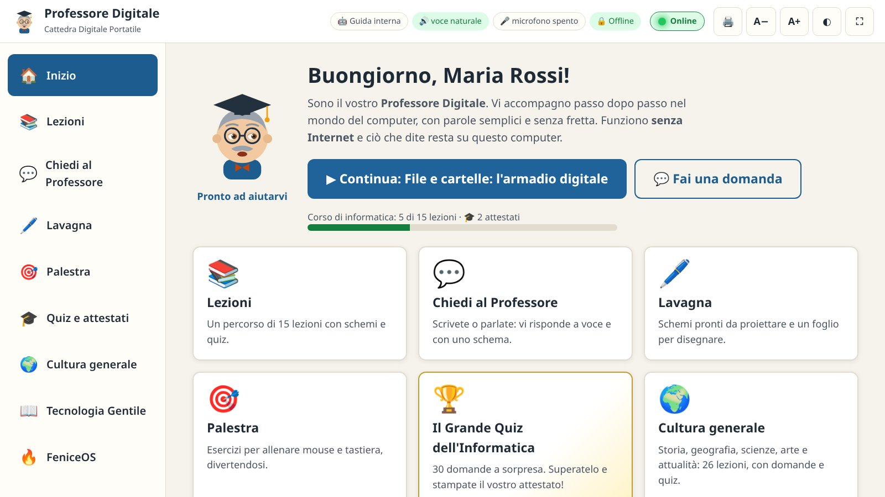
A chi è rivolto
È pensato per i luoghi dove il divario digitale si sente di più: centri anziani, circoli culturali, biblioteche, parrocchie, scuole, associazioni e famiglie. Funziona bene anche dove la connessione è assente o instabile, perché tutto il lavoro avviene sul computer. La versione per Windows permette di usarlo sui computer che già ci sono, dal vecchio portatile con Windows XP al PC nuovo con Windows 11.
I principi del progetto
- Offline per davvero. Lezioni, quiz, guida, lavagna, palestra e voci funzionano senza rete. Internet serve solo, e una volta sola, per aggiungere i componenti facoltativi.
- Privacy per costruzione. Domande, risposte e progressi restano sul computer. Nessun account, nessun tracciamento, nessun abbonamento. Le sole due eccezioni (l'indicatore «Online» e il quadro dell'aula) sono dichiarate, limitate e si possono spegnere (capitolo 17).
- Tecnologia gentile e riuso. Il programma si adatta da solo a ciò che il computer può fare, dal PC con Windows XP a quello più recente: meno rifiuti elettronici, più persone connesse.
- Su misura. Prima di installare l'intelligenza artificiale, il Professore esamina il computer e sceglie il modello più adatto: né troppo grande (lento), né troppo piccolo.
- Non si blocca mai. Se l'IA non c'è, o non risponde, il Professore usa la sua guida interna. L'allievo riceve sempre una risposta.
- Trasparenza. Il programma non scarica nulla da solo: aggiornamenti e scaricamenti partono solo se lo chiedete voi.
Cosa trovate dentro
| Sezione | A cosa serve | |
|---|---|---|
| 📚 | Lezioni | Il corso di informatica: 15 lezioni guidate (circa 5 ore in tutto), ognuna con passi brevi, uno schema alla lavagna, lettura ad alta voce e un quiz finale. |
| 💬 | Chiedi al Professore | Domande scritte o a voce. Risponde la guida interna (92 risposte pronte, di cui 19 dedicate a Windows, più il testo delle lezioni) oppure l'IA locale. |
| 🖊️ | Lavagna | Decine di schemi pronti da mostrare al gruppo e un foglio per disegnare con gessetti colorati. |
| 🎯 | Palestra | Undici esercizi: clic, doppio clic, trascinare, tastiera, tasti speciali, scorrere, clic destro, selezionare, copia e incolla, memory, riconosci la truffa. |
| 🎓 | Quiz e attestati | Nove grandi quiz, tra cui il Grande Quiz dell'Informatica (264 domande). Con il 70% di risposte giuste si ottiene un attestato con il proprio nome. |
| 🌍 | Cultura generale | 26 lezioni di storia, geografia, scienze, arte e attualità, 145 domande e risposte da consultare, un quiz per ogni materia. |
| 📖 | Tecnologia Gentile | Il libro di Danilo D'Auria raccontato in 20 lezioni, con domande e risposte e un quiz finale. |
| 🔥 | FeniceOS | Il sistema operativo che fa rinascere i vecchi computer: come provarlo, i requisiti, il manifesto, 12 lezioni sul riuso, domande e quiz. |
| 🏫 | Aula | Il quadro dell'aula: il PC del facilitatore vede i PC degli allievi collegati alla stessa rete e manda messaggi a tutti. |
| 🧰 | Configura IA e voce | Esame del computer e installazione guidata di intelligenza artificiale e microfono; chiavetta per i PC senza rete. |
| ⚙️ | Impostazioni | Testo più grande, colori ad alto contrasto, modalità proiettore, scelta della voce, saluti e consigli, salvataggio dei progressi. |
Di cosa avete bisogno
Il Professore Digitale si accontenta di poco: il programma di base funziona su qualsiasi Windows da XP in poi. Solo l'intelligenza artificiale chiede un computer più recente e un po' di memoria.
Che cosa funziona su quale Windows
| Sistema | Lezioni, quiz, guida, lavagna, palestra, aula | Voce | Microfono | IA locale |
|---|---|---|---|---|
| Windows 11, Windows 10 22H2 | ✔ | ✔ Riccardo e Paola + voci di Windows | ✔ (64 bit) | ✔ Ollama |
| Windows 10 non aggiornato (prima del 22H2) | ✔ | ✔ Riccardo e Paola (64 bit) | ✔ (64 bit) | ✔ motore compatibile |
| Windows 8 e 8.1 | ✔ | ✔ Riccardo e Paola (64 bit) | ✔ (64 bit) | ✔ motore compatibile (64 bit) |
| Windows 7 SP1 | ✔ | ✔ Riccardo e Paola (64 bit) | ✔ (64 bit) | ✔ motore compatibile (64 bit) |
| Windows Vista | ✔ con Supermium | ✔ se c'è una voce italiana | — | — guida interna |
| Windows XP SP3 | ✔ con Supermium | ✔ se c'è una voce italiana | — | — guida interna |
| Qualsiasi Windows a 32 bit | ✔ | ✔ voci di Windows | — | — guida interna |
«Riccardo» (voce maschile) e «Paola» (voce femminile) sono le voci naturali italiane incluse nell'installatore: funzionano senza Internet su Windows 7 e successivi a 64 bit. «Motore compatibile» è KoboldCpp, un programma che fa girare i modelli di IA anche sui Windows che Ollama non supporta (capitolo 14). Supermium è un browser moderno costruito apposta per Windows XP e Vista (capitolo 21).
Il computer
| Uso | Memoria (RAM) | Processore | Spazio su disco |
|---|---|---|---|
| Programma di base lezioni, quiz, guida, lavagna, palestra, voci di Windows | 1 GB (XP, Vista, 7) · 2 GB (8, 10, 11) | Qualsiasi, anche 32 bit | circa 20 MB |
| Con le voci naturali Riccardo e Paola | 2 GB | 64 bit | + 130 MB (già nell'installatore) |
| Con microfono (Vosk) | 2 GB | 64 bit | + 110 MB |
| Con IA locale, PC datato | 4 GB | 64 bit, 2 core | + 1–2 GB |
| Con IA locale, PC normale | 8 GB | 64 bit, 4 core con AVX2 | + 3–5 GB |
| Con IA locale, PC recente o con scheda video | 16–32 GB, oppure scheda video NVIDIA/AMD da 6–12 GB | 64 bit | + 7–10 GB |
Servono anche uno schermo, altoparlanti o cuffie per la voce e, per fare domande a voce, un microfono (anche quello del portatile o della webcam). Per il quadro dell'aula i computer devono essere collegati alla stessa rete (Wi-Fi o cavo); Internet non serve.
Il browser
Il Professore si mostra dentro un browser, in una finestra pulita, senza barre. Lo sceglie da solo: Microsoft Edge (già presente in Windows 10 e 11), Google Chrome, Supermium, Brave o Vivaldi; in mancanza usa Firefox. Su Windows 7 e 8 vanno bene le ultime versioni di Edge e Chrome per quei sistemi. Internet Explorer è troppo vecchio: se il Professore si apre lì, compare un messaggio con le istruzioni.
I file che ricevete
| File | Cos'è |
|---|---|
ProfessoreDigitale-Setup-3.0.0.exe | L'installatore per Windows, unico per tutti i sistemi da XP a 11, a 32 e 64 bit (circa 107 MB: è più grande delle versioni precedenti perché include le voci naturali). |
professore-digitale-windows-3.0.0.zip | La versione da chiavetta: si estrae e si usa senza installare; i progressi restano sulla chiavetta. |
professore-digitale-portatile.html | La versione da aprire con doppio clic in qualsiasi browser, senza installazione (senza IA, voci naturali, microfono e aula). |
professore-digitale_3.0.0_all.deb | Il pacchetto per i computer Linux. |
SHA256SUMS | Le «impronte digitali» dei file, per verificare che siano integri. |
.html per una prova veloce.Installazione
Un solo installatore va bene per tutti i computer Windows. L'installazione non scarica nulla da Internet e richiede un paio di minuti.
Metodo A · Con il mouse (consigliato)
- Copiate
ProfessoreDigitale-Setup-3.0.0.exesul desktop o nella cartella Download e fate doppio clic. - Se compare la finestra blu «Windows ha protetto il PC», fate clic su Ulteriori informazioni e poi su Esegui comunque (vedi riquadro).
- Scegliete per chi installare: «Per tutti gli utenti» (consigliato nelle aule: serve la password di amministratore e aggiunge la regola del firewall per il quadro dell'aula) oppure «Solo per me» (non chiede nessuna password).
- Lasciate le spunte proposte: programma, icona sul desktop e — sui Windows a 64 bit — il motore del microfono e le voci naturali Paola e Riccardo.
- Al termine lasciate la spunta su «Configura subito IA e voce» se il computer è collegato a Internet: il Professore si apre e vi guida (capitolo 14). Altrimenti scegliete solo «Apri il Professore Digitale».
Metodo B · Per molti computer (aule, centri, scuole)
L'installatore accetta opzioni per lavorare senza domande, utili con gli strumenti di distribuzione o da un file .bat sulla chiavetta:
rem per tutti gli utenti, in silenzio (da amministratore): aggiunge anche la regola del firewall per l'aula ProfessoreDigitale-Setup-3.0.0.exe /S /AllUsers rem solo per l'utente attuale, senza password ProfessoreDigitale-Setup-3.0.0.exe /S /CurrentUser
I progressi degli allievi stanno nel profilo di ciascun utente di Windows: con un account per allievo, ognuno ritrova il proprio percorso.
Metodo C · Versione da chiavetta (senza installare)
- Estraete
professore-digitale-windows-3.0.0.zipsulla chiavetta (tasto destro → Estrai tutto). - Aprite la cartella
ProfessoreDigitalee fate doppio clic suProfessoreDigitale.exe. - I progressi (lezioni, quiz, attestati, promemoria) vengono salvati nella sottocartella
dati, accanto al programma: la chiavetta passa da un PC all'altro con il proprio percorso.
Metodo D · La versione portatile
Doppio clic su professore-digitale-portatile.html: si apre nel browser e funziona subito, anche da chiavetta. Lezioni, quiz con attestato, cultura generale,
palestra e lavagna ci sono tutti; i progressi vengono ricordati dal browser di quel computer.
Aggiornare dalla versione 2.3
Eseguite il nuovo installatore sopra la versione già presente: non serve disinstallare. Impostazioni, progressi, conversazioni, IA e microfono già configurati restano al loro posto (capitolo 18).
Verificare l'integrità del file (facoltativo)
Se il file è passato da molte chiavette, controllate che non si sia rovinato. Nella cartella del file, tenendo premuto Maiusc, fate clic destro in uno spazio vuoto, scegliete Apri finestra PowerShell qui (o Prompt dei comandi) e scrivete:
certutil -hashfile ProfessoreDigitale-Setup-3.0.0.exe SHA256
Il codice che compare deve essere uguale a quello scritto accanto al nome del file in SHA256SUMS (si apre con il Blocco note).
ProfessoreDigitale-kit con l'IA e il microfono già pronti (capitolo 14): in pochi minuti ogni PC è completo, anche senza Internet.Il primo avvio
Fate doppio clic sull'icona Professore Digitale sul desktop, oppure cercatela nel menu Start. Dopo qualche secondo si apre una finestra pulita, senza le barre del browser, e il Professore vi dà il benvenuto a voce.
Cosa succede dietro le quinte
L'icona avvia un piccolo programma invisibile che lavora solo dentro il computer (all'indirizzo http://127.0.0.1:8765) e apre
l'interfaccia nel browser. Se l'icona viene premuta di nuovo, il programma non si duplica: riapre la finestra. Quando tutte le finestre del
Professore restano chiuse per quattro minuti, si spegne da solo per non consumare memoria; con il pulsante 🚪 Esci si chiude subito (capitolo 12).
L'icona vicino all'orologio
Mentre il Professore è attivo, la sua icona compare nell'area di notifica, in basso a destra accanto all'orologio (su Windows 10 e 11 può essere nascosta sotto la piccola freccia ^).
| Azione | Cosa fa |
|---|---|
| Clic sull'icona | Riapre la finestra del Professore. |
| Tasto destro → Configura IA e voce | Apre la configurazione guidata (capitolo 14). |
| Tasto destro → Vademecum (PDF) | Apre questo libretto. |
| Tasto destro → Cartella dei progressi | Mostra dove sono salvati progressi e impostazioni. |
| Tasto destro → Chiudi il Professore Digitale | Spegne il programma (non si perde nulla). |
La pagina Inizio
In alto il Professore saluta (buongiorno, buon pomeriggio o buonasera, con il nome dell'allievo se è stato scritto), propone di continuare la lezione dal punto in cui eravate rimasti e mostra quante lezioni del corso sono completate e quanti attestati avete ottenuto. Sotto, un riquadro per ogni sezione:
| 📚 | Lezioni · Chiedi al Professore · Lavagna · Palestra | Le sezioni di sempre. |
| 🏆 | Il Grande Quiz dell'Informatica | 30 domande a sorpresa; superatelo e stampate il vostro attestato (capitolo 9). |
| 🌍 | Cultura generale | Storia, geografia, scienze, arte e attualità (capitolo 10). |
| 📖 | Tecnologia Gentile · FeniceOS | Il libro e il sistema operativo di Danilo D'Auria (capitolo 11). |
| 🎓 | Quiz e attestati | Tutti i grandi quiz e gli attestati già ottenuti. |
| 📘 | Vademecum | Apre questo libretto, da leggere o stampare. |
| 🏫 | Aula | Il quadro dell'aula in rete locale (capitolo 15). |
In fondo alla pagina c'è il riquadro 📝 I miei promemoria: le cose da non dimenticare, che il Professore vi ricorda quando uscite (capitolo 12).
La barra in alto
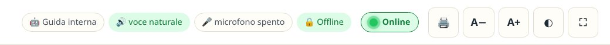
| Pastiglia | Significato |
|---|---|
| 🤖 nome del modello / 🤖 Guida interna | Quale «cervello» risponde: l'IA locale oppure la guida interna. |
| 🔊 voce naturale / voce di Windows | Il motore della voce in uso (verde se disponibile). |
| 🎤 vosk / microfono spento | Se le domande a voce sono attive. |
| 🔒 Offline | Promemoria: tutto ciò che fate resta su questo computer. |
| ● Online | Verde quando la connessione a Internet funziona, grigio «Non in linea» quando manca. Il Professore funziona in entrambi i casi (capitolo 12). |
| Pulsante | Cosa fa |
|---|---|
| ■ Stop voce (rosso) | Compare mentre il Professore parla: lo fa tacere subito. Anche Esc ferma la voce. |
| 🖨️ | Stampa la pagina che vedete oppure l'argomento intero (capitolo 12). |
| A− e A+ | Rimpiccioliscono o ingrandiscono tutto il testo. |
| ◐ | Cambia i colori: chiaro, scuro, alto contrasto. |
| ⛶ | Modalità proiettore: schermo intero, testo grande, menu nascosto. |
Nel menu a sinistra, sotto le sezioni, il pulsante 🚪 Esci chiude il Professore salutando e ricordando i promemoria.
Il Professore, i suoi stati e i suoi occhi
Il personaggio con il tocco e gli occhiali cambia espressione per far capire cosa sta facendo: un aiuto prezioso per chi è alle prime armi. I suoi occhi seguono il puntatore del mouse: ogni occhio guarda per conto suo (se avvicinate il mouse al viso, gli occhi si avvicinano tra loro come fanno i nostri), il movimento è morbido, le palpebre sbattono a intervalli irregolari, le pupille si allargano con i colori scuri e quando nessuno muove il mouse il Professore si guarda un po' intorno. Mentre l'allievo scrive una domanda, il Professore guarda la casella di testo.
| Stato | Come si riconosce |
|---|---|
| Pronto ad aiutarvi | Sbatte le palpebre e segue con lo sguardo il mouse. |
| Vi ascolto… | Onde arancioni vicino all'orecchio e sopracciglia alzate: il microfono è acceso. |
| Sto pensando… | Nuvolette sopra la testa e sguardo verso l'alto: sta preparando la risposta. |
| Sto spiegando… | La bocca si muove: sta leggendo ad alta voce. |
| In attesa… | Occhi socchiusi: nessuno lo usa da un po'. Basta muovere il mouse o premere un tasto per «svegliarlo» (capitolo 12). |
Chi preferisce un'immagine ferma può spegnere gli occhi mobili in Impostazioni → Vista. Se in Windows è attiva l'opzione «Mostra animazioni» spenta (riduzione del movimento), gli occhi restano fermi da soli.
Le Lezioni
Il cuore della Cattedra è il corso di informatica: 15 lezioni, dal primo contatto con il computer fino ai servizi pubblici digitali, agli acquisti sicuri e all'intelligenza artificiale. Ogni lezione dura dai 15 ai 25 minuti.
Il catalogo
| Lezione | Livello | Min. | Obiettivo | |
|---|---|---|---|---|
| 🖥️ | Il computer: com'è fatto | Primi passi | 15 | Conoscere le parti del computer, accenderlo e spegnerlo nel modo giusto. |
| 🖱️ | Usare il mouse | Primi passi | 20 | Clic, doppio clic, clic destro, trascinare. |
| ⌨️ | La tastiera senza paura | Primi passi | 20 | Scrivere, correggere, maiuscole, chiocciola @. |
| 🪟 | Il desktop e le finestre | Primi passi | 15 | Orientarsi sul desktop, ridurre, ingrandire e chiudere finestre. |
| 📁 | File e cartelle: l'armadio digitale | Intermedio | 20 | Salvare, ritrovare, cestino, chiavetta USB. |
| 🌐 | Internet e il browser | Intermedio | 20 | Cos'è Internet, cercare, riconoscere i siti affidabili. |
| ✉️ | La posta elettronica | Intermedio | 20 | Scrivere un'email, allegare una foto, riconoscere lo spam. |
| 📱 | Smartphone, messaggi e videochiamate | Intermedio | 20 | Messaggi, vocali e videochiamate con i propri cari. |
| 🖼️ | Foto e ricordi al sicuro | Intermedio | 15 | Passare le foto dal telefono al computer, ordinarle, farne copie. |
| 🔐 | Password e sicurezza | Sicurezza | 20 | La frase segreta, dove conservarla, la verifica in due passaggi. |
| 🛡️ | Riconoscere le truffe online | Sicurezza | 25 | Phishing, SMS falsi, finti tecnici; cosa fare se si è stati truffati. |
| 🛒 | Acquisti e pagamenti online sicuri | Sicurezza | 20 | Scegliere il negozio, pagare in modo protetto, riconoscere i falsi. |
| 🏛️ | Servizi pubblici digitali | Avanzato | 25 | SPID, CIE, app IO, pagoPA e come riconoscere i falsi. |
| 🤖 | L'intelligenza artificiale, spiegata semplice | Avanzato | 20 | Cosa sa fare l'IA, dove sbaglia, perché l'IA locale tutela la privacy. |
| 🐧 | Linux, software libero e riuso | Avanzato | 15 | Perché un computer vecchio può rinascere: utile anche a chi usa Windows XP o 7. |
Le lezioni di cultura generale, del libro Tecnologia Gentile e di FeniceOS hanno la stessa forma, ma stanno nelle loro pagine (capitoli 10 e 11) e non entrano nel conteggio del corso.
Come è fatta una lezione
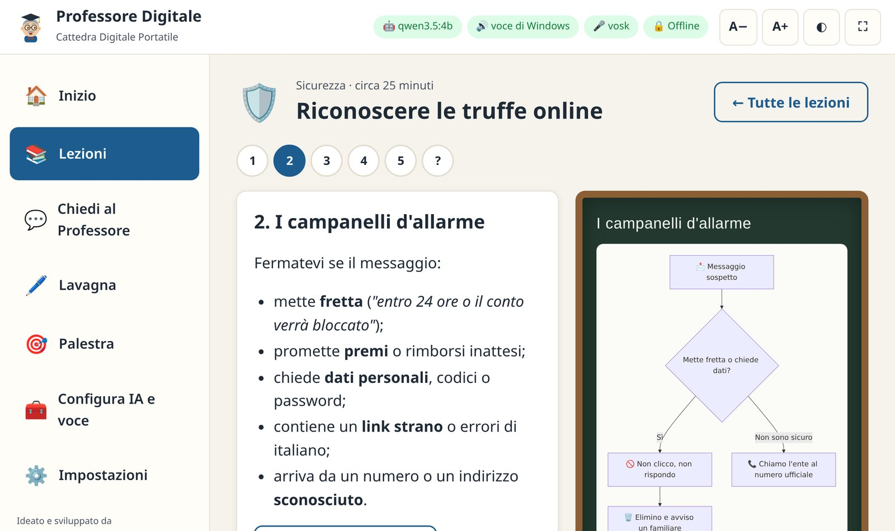
- I pallini numerati in alto sono i passi; il punto interrogativo è il quiz. I passi già visti diventano verdi. Si può saltare avanti e indietro liberamente.
- Il testo è breve e usa metafore della vita quotidiana (l'armadio per le cartelle, la strada per Internet, la chiave per la password). In fondo c'è spesso un 💡 consiglio.
- La lavagna a destra mostra lo schema del passo, quando c'è.
- 🔊 Leggi ad alta voce fa leggere il passo al Professore; 💬 Ho una domanda porta alle domande con l'argomento già scritto.
- Avanti → e ← Indietro, grandi e in basso, per chi ha difficoltà con il mouse.
Il quiz finale
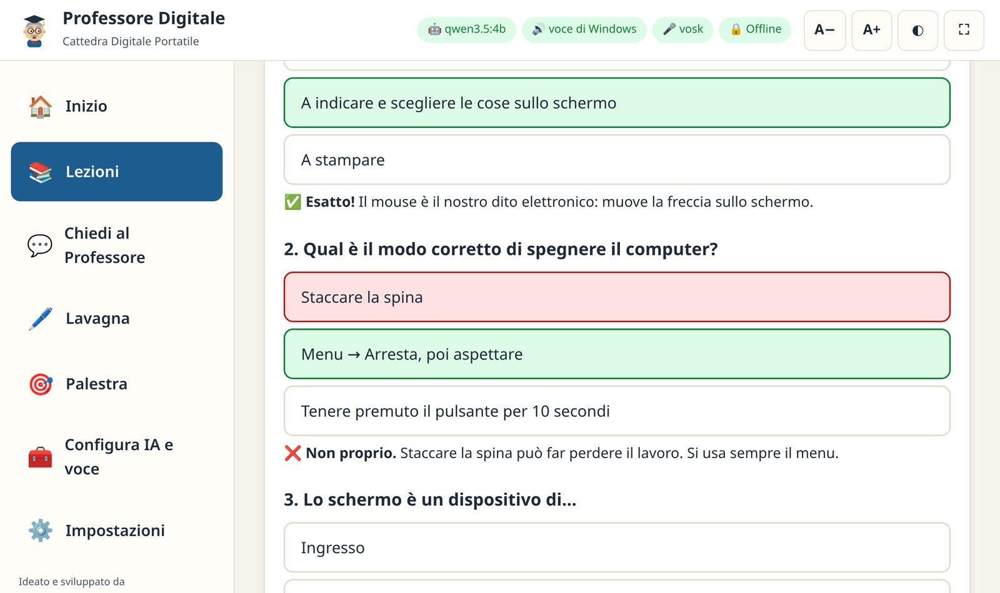
Il quiz non dà voti: serve a ripassare. Dopo ogni risposta il Professore dice se è giusta e spiega il perché, a voce e per iscritto. La risposta corretta viene sempre evidenziata in verde.
Quando tutte le domande hanno una risposta, la lezione risulta completata e compaiono due pulsanti: la lezione successiva e, dove previsto, l'esercizio collegato in Palestra. I progressi (passi visti, lezioni completate, punteggi) vengono salvati da soli.
Per mettersi alla prova sul corso intero c'è Il Quiz del Corso di Informatica, con attestato (capitolo 9).
Chiedi al Professore
Qui si fanno le domande, con le proprie parole: «come si scrive la chiocciola?», «il programma non risponde», «mi è comparso un messaggio che dice di chiamare l'assistenza Microsoft». Il Professore risponde per iscritto, a voce e, quando serve, con uno schema sulla lavagna.
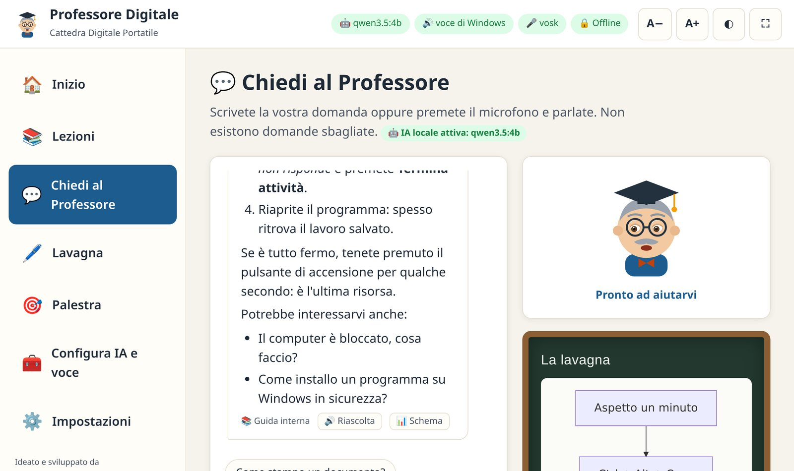
Fare una domanda
- Scrivendo: scrivete nel riquadro e premete Invia oppure Invio. Per andare a capo senza inviare: Maiusc + Invio.
- Con i suggerimenti: i pulsanti tondi sopra il riquadro sono domande pronte, utili per rompere il ghiaccio.
- A voce: premete il microfono arancione 🎤 e parlate. Quando smettete di parlare, dopo un paio di secondi il Professore capisce che avete finito (potete anche premere di nuovo il pulsante, diventato ■). La prima volta il browser chiede il permesso di usare il microfono: scegliete Consenti. Il microfono si attiva con la configurazione del capitolo 14.
Chi risponde: guida interna o IA
| 📚 Guida interna | 🤖 IA locale | |
|---|---|---|
| Sempre disponibile | Sì, su ogni Windows e nella versione portatile | Solo se configurata (capitolo 14) |
| Cosa sa | 92 risposte verificate (19 dedicate a Windows), il testo delle lezioni e le domande di cultura generale, del libro e di FeniceOS | Risponde a domande libere, formulate in molti modi |
| Affidabilità | Contenuti scritti e controllati | Buona, ma può sbagliare: va verificata sui temi importanti |
| Velocità | Istantanea | Da pochi secondi a un minuto, secondo il computer e il modello |
Quando l'IA è attiva, il Professore le passa anche le informazioni pertinenti della guida interna: così anche i modelli più piccoli danno risposte più precise. Se l'IA non risponde o dà errore, la risposta arriva comunque dalla guida interna, con una nota che lo segnala. Se la guida non trova una risposta adatta, lo dice apertamente e propone gli argomenti più vicini: meglio un «non lo so» onesto che una risposta sbagliata.
Sui computer Windows, alle domande su argomenti comuni (file scaricati, chiavetta, antivirus, schermate) il Professore preferisce le risposte scritte apposta per Windows: menu Start, Esplora file, Ctrl + Alt + Canc, Windows Update, Sicurezza di Windows, voce italiana.
I pulsanti sotto le risposte
| 🔊 Riascolta | Fa rileggere la risposta. |
| 📊 Schema | Riporta sulla lavagna lo schema di quella risposta. |
| 📚 Apri la lezione | Porta al passo della lezione da cui proviene la risposta. |
| ■ Ferma la risposta | Interrompe l'IA mentre scrive (utile se la risposta è troppo lunga). |
| 🧹 Nuova conversazione | Cancella la conversazione e ricomincia (ad esempio quando cambia l'allievo). |
Con 🖨️ → Stampa tutta la conversazione le domande e le risposte della giornata finiscono su carta, da portare a casa.
La Lavagna
La lavagna ha due facce: gli schemi pronti, da proiettare mentre si spiega, e il disegno libero, per tracciare a mano frecce, cerchi e parole.
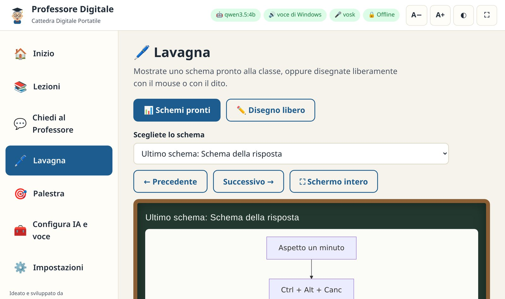
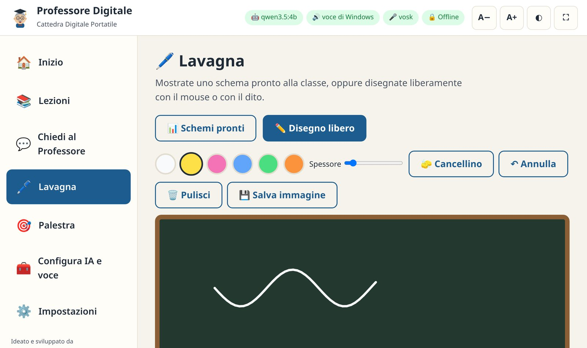
Schemi pronti
L'elenco raccoglie gli schemi delle lezioni e della guida e, in cima, l'ultimo schema disegnato in una risposta. ⛶ Schermo intero ingrandisce la lavagna per il proiettore. Sulle lavagne strette gli schemi orizzontali lunghi vengono ridisposti in verticale da soli, per restare leggibili.
Disegno libero
- Gessetti: sei colori (bianco, giallo, rosa, azzurro, verde, arancio). Funziona con il mouse, con il dito sugli schermi touch e con le penne.
- Spessore: il cursore regola la grandezza del tratto.
- 🧽 Cancellino, ↶ Annulla (fino a 20 passi indietro) e 🗑️ Pulisci.
- 💾 Salva immagine: scarica il disegno come immagine PNG nella cartella Download, per stamparlo o mandarlo al gruppo.
Il disegno resta sulla lavagna anche se passate a un'altra sezione e poi tornate.
La Palestra
Mouse e tastiera si imparano con le mani, non con gli occhi. La Palestra propone undici esercizi brevi e giocosi, in cui non si può sbagliare: si può solo migliorare. Ogni esercizio ricorda il vostro record personale.
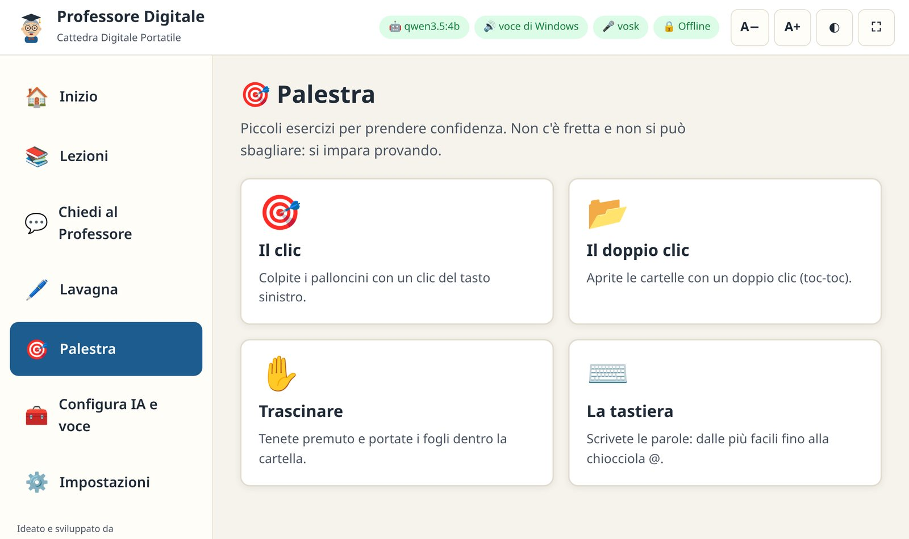
| Esercizio | Cosa si allena | Come funziona | |
|---|---|---|---|
| 🎯 | Il clic | Mira e clic sinistro | Compaiono 10 palloncini, uno alla volta, in punti diversi; diventano più piccoli man mano. Record: il tempo più breve. |
| 📂 | Il doppio clic | Selezionare e aprire | Cinque cartelle: un clic le seleziona, due clic rapidi («toc-toc») le aprono. Insegna la differenza tra i due gesti. |
| ✋ | Trascinare | Tenere premuto e spostare | Cinque fogli da portare nella cartella in basso a destra, come in Esplora file. |
| ⌨️ | La tastiera | Scrivere e correggere | Dodici parole di difficoltà crescente, da «casa» fino a «mario@esempio.it», con suggerimenti su Maiusc, spazio, Alt Gr e trattino. |
| ⏎ | I tasti speciali | Trovare i tasti importanti | Dieci tasti da trovare e premere: Invio, Spazio, Cancella, Maiuscolo, Esc, le frecce, Tab, Canc e la chiocciola. Per ognuno, dove si trova e a cosa serve. |
| 🖲️ | Scorrere la pagina | La rotellina del mouse | Una pagina lunga piena di disegni: girando la rotellina si cercano le cinque stelle ⭐ nascoste e si fa clic su ciascuna. |
| 🖱️ | Il clic destro | Il menu del tasto destro | Cinque prove: clic destro sul file indicato («Lettera», «Foto del mare»…) e scelta del comando giusto (Apri, Copia, Rinomina). |
| 🖍️ | Selezionare il testo | Doppio e triplo clic | Doppio clic per selezionare una parola, triplo clic per tutta la frase. |
| 📋 | Copia e incolla | Ctrl + C e Ctrl + V | Quattro frasi (un saluto, un indirizzo email, un indirizzo di casa, un appuntamento) da copiare e incollare, con la tastiera o con il clic destro. |
| 🧠 | Memory digitale | Occhio e mouse insieme | Dodici carte coperte con i simboli del digitale: si girano due alla volta per trovare le sei coppie. |
| 🚩 | Riconosci la truffa | Prudenza | Dieci messaggi (SMS, email, WhatsApp, telefonate): per ognuno si sceglie «È una truffa» o «È affidabile» e il Professore spiega i segnali da notare. |

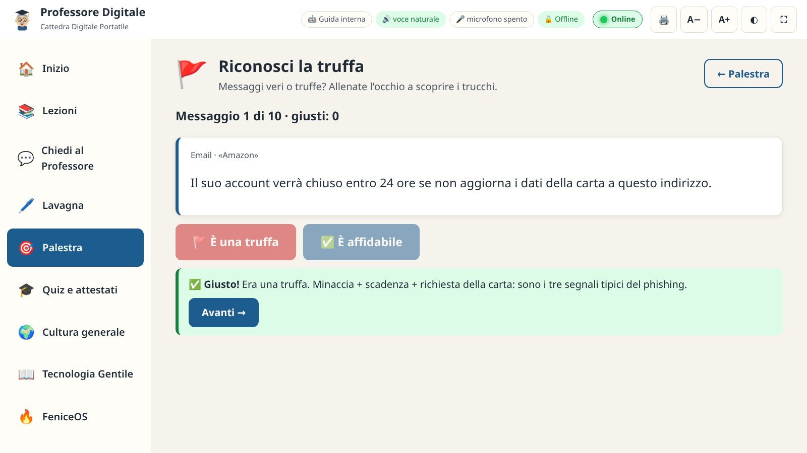
Quiz e attestati
Dopo le lezioni, la prova: i grandi quiz mettono alla prova con calma, senza fretta e senza voti di scuola. Chi risponde bene ad almeno il 70% delle domande riceve un attestato con il proprio nome, da stampare o salvare in PDF.
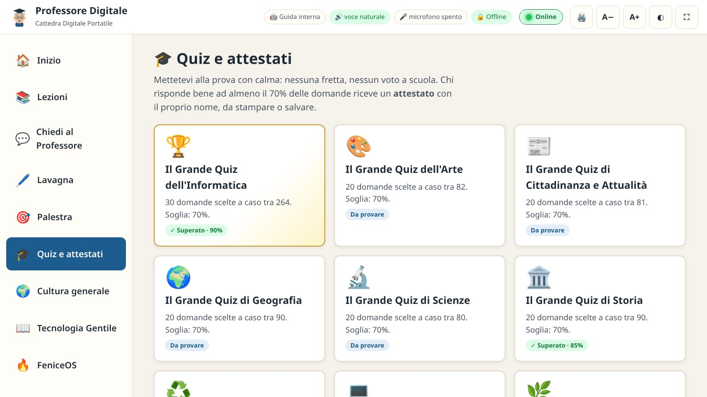
I grandi quiz
| Quiz | Domande per tentativo | Da dove vengono | |
|---|---|---|---|
| 🏆 | Il Grande Quiz dell'Informatica | 30 su 264 | Il manuale di Danilo D'Auria: storia, hardware, sistemi operativi, software, Internet, comunicazione, sicurezza, cloud, intelligenza artificiale, economia circolare, FeniceOS e Linux, dal livello Base all'Esperto. |
| 🖥️ | Il Quiz del Corso di Informatica | 20 su 148 | Ciò che si è imparato nelle lezioni del corso: mouse e tastiera, file, Internet, posta, password, truffe, smartphone, servizi pubblici, IA, Linux e Windows. |
| 🏛️ | Storia · Geografia · Scienze · Arte · Cittadinanza e Attualità | 20 per ciascuno, su 80–90 | Le materie della Cultura generale (capitolo 10). |
| ♻️ | Il Grande Quiz di FeniceOS e del Riuso | 20 su 141 | FeniceOS, Linux, recupero dei computer ed economia circolare. |
| 🌿 | Il Quiz di Tecnologia Gentile | 20 su 82 | Il libro di Danilo D'Auria (capitolo 11). |
Come si svolge
- Scegliete un quiz. Nella prima pagina il Professore spiega le regole e chiede nome e cognome: è il nome che comparirà sull'attestato (si può scrivere una volta sola in Impostazioni → Vista, «Nome dell'allievo»).
- Premete ▶ Inizia il quiz. Le domande arrivano una alla volta, scelte a caso e mescolate tra gli argomenti: ogni tentativo è diverso, e anche l'ordine delle risposte cambia.
- Fate clic sulla risposta. Subito compare se è giusta (in verde) o no (in rosso, con quella giusta in verde) e una breve spiegazione. 🔊 Leggi la domanda fa leggere domanda e risposte al Professore. Poi Avanti →.
- Alla fine vedete quante risposte giuste avete dato. Con almeno il 70% il quiz è superato e compare 🎓 Il vostro attestato; altrimenti il Professore incoraggia a ripassare e riprovare.
- Sotto il risultato, il riquadro 📝 Da ripassare elenca le domande sbagliate con la risposta giusta e la spiegazione.
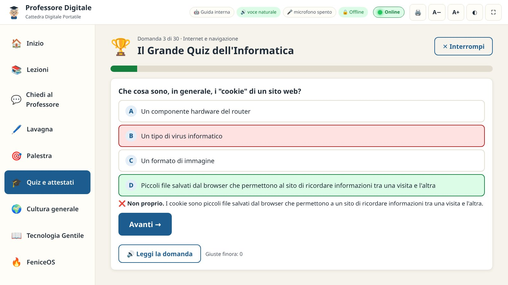
Si può riprovare tutte le volte che si vuole: il Professore ricorda il miglior risultato e il numero di tentativi. ✕ Interrompi torna all'elenco senza salvare il tentativo.
L'attestato

- Contiene il nome dell'allievo, il titolo del quiz e l'ambito, le risposte esatte con la percentuale, un giudizio (Sufficiente, Buono dal 75%, Ottimo dall'85%, Eccellente dal 95%), la data, un codice che lo identifica e lo spazio per la firma.
- Il nome del facilitatore o del corso, se scritto in Impostazioni → Vista, compare già al posto della firma.
- Il nome si può correggere nella casella Nome sull'attestato sopra il disegno (per esempio per aggiungere il secondo nome).
- 🖨️ Stampa lo prepara su un foglio A4 orizzontale. 📄 Salva in PDF crea il file
Attestato - Nome - Titolo.pdfnella cartella Download, da conservare, mandare per email o stampare altrove. Tutto avviene sul computer, senza Internet. - Gli attestati ottenuti restano nell'elenco 🏅 I vostri attestati, in fondo alla pagina Quiz e attestati, con il pulsante Apri e stampa.
Cultura generale
Il computer è anche una finestra sul mondo. In 🌍 Cultura generale trovate lezioni brevi di storia, geografia, scienze, arte e attualità, con schemi alla lavagna, domande e risposte da consultare e un grande quiz per ogni materia: un modo piacevole per esercitarsi con il computer imparando altro.
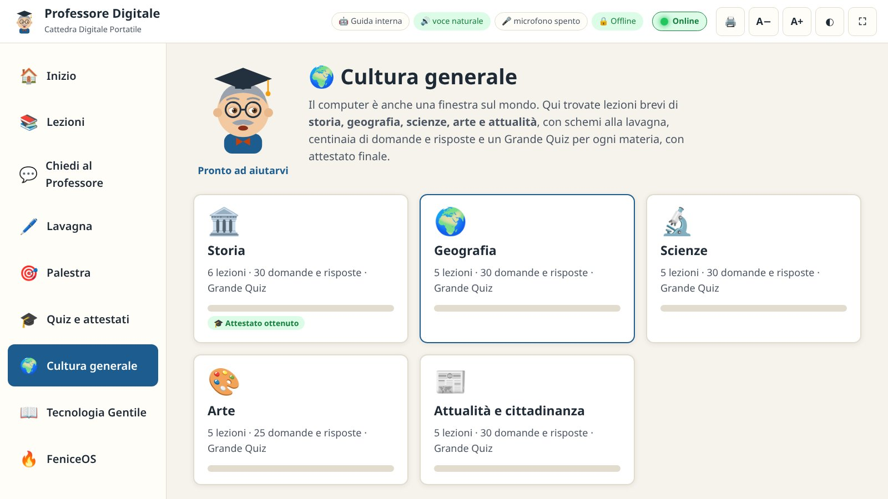
| Materia | Lezioni | Domande e risposte | |
|---|---|---|---|
| 🏛️ | Storia | Preistoria e prime civiltà · Grecia antica e Roma · Il Medioevo · Rinascimento, scoperte ed età moderna · Il Risorgimento e l'Unità d'Italia · Il Novecento: guerre, Repubblica ed Europa | 30 |
| 🌍 | Geografia | La Terra: forma, movimenti e stagioni · L'Italia fisica · L'Italia delle regioni e dei capoluoghi · L'Europa e i suoi Paesi · Leggere una mappa e orientarsi | 30 |
| 🔬 | Scienze | Il corpo umano e la salute · Il sistema solare e lo spazio · Materia, energia ed elettricità in casa · La natura, gli ecosistemi e la biodiversità · Il clima e l'ambiente | 30 |
| 🎨 | Arte | L'arte antica: Grecia e Roma · L'arte medievale e Giotto · Il Rinascimento: Leonardo, Michelangelo, Raffaello · Dal Barocco all'Impressionismo · Arte moderna, musei e patrimonio UNESCO | 25 |
| 📰 | Attualità e cittadinanza | La Costituzione italiana e i suoi principi · Come funziona lo Stato · L'Unione europea e le organizzazioni internazionali · Informarsi bene e riconoscere le notizie false · Sostenibilità e futuro | 30 |
La pagina di una materia
Facendo clic su una materia si apre la sua pagina, divisa in tre parti:
- 📚 Lezioni: si svolgono come quelle del corso (capitolo 5), con passi, schemi, lettura ad alta voce e quiz finale.
- Il Grande Quiz della materia: 20 domande a sorpresa, con attestato (capitolo 9).
- ❓ Domande e risposte: un elenco da consultare. Scrivete una parola nella casella di ricerca (per esempio «Garibaldi», «Alpi», «Leonardo») e restano solo le domande che la contengono; fate clic su una domanda per aprire la risposta, con lo schema quando c'è, 🔊 Leggi e 📚 Apri la lezione.

Le stesse domande sono note anche a Chiedi al Professore: «chi era Garibaldi?» riceve la risposta anche dalla guida interna. Con 🖨️ → Stampa lezioni e domande dell'argomento si ottiene un fascicolo con l'elenco delle lezioni e tutte le domande e risposte della materia.
Tecnologia Gentile e FeniceOS
Il Professore Digitale fa parte di un progetto più ampio di Danilo D'Auria: un libro che spiega l'idea di Tecnologia Gentile e un sistema operativo, FeniceOS, che la mette in pratica sui computer da recuperare. Ciascuno ha la sua pagina, nel menu a sinistra.
📖 Tecnologia Gentile · il libro

Tecnologia Gentile: Informatica Sostenibile è il libro di Danilo D'Auria, pubblicato su Amazon. Racconta un'informatica a misura di persona: inclusiva, rispettosa dell'ambiente e di chi sta imparando. Nella pagina trovate:
- 📖 I capitoli: 20 lezioni brevi, una per capitolo, dal Manifesto della Tecnologia Gentile alla storia del computer, dalla sicurezza allo «smartphone senza occhiali», dai «Nipoti Digitali» alla rigenerazione dei PC, fino all'Intelligenza Artificiale Gentile.
- Il Quiz di Tecnologia Gentile: 20 domande su 82, con attestato.
- ❓ Domande e risposte sul libro: 67 domande con la ricerca per parola.
🔥 FeniceOS · il sistema operativo della rinascita digitale
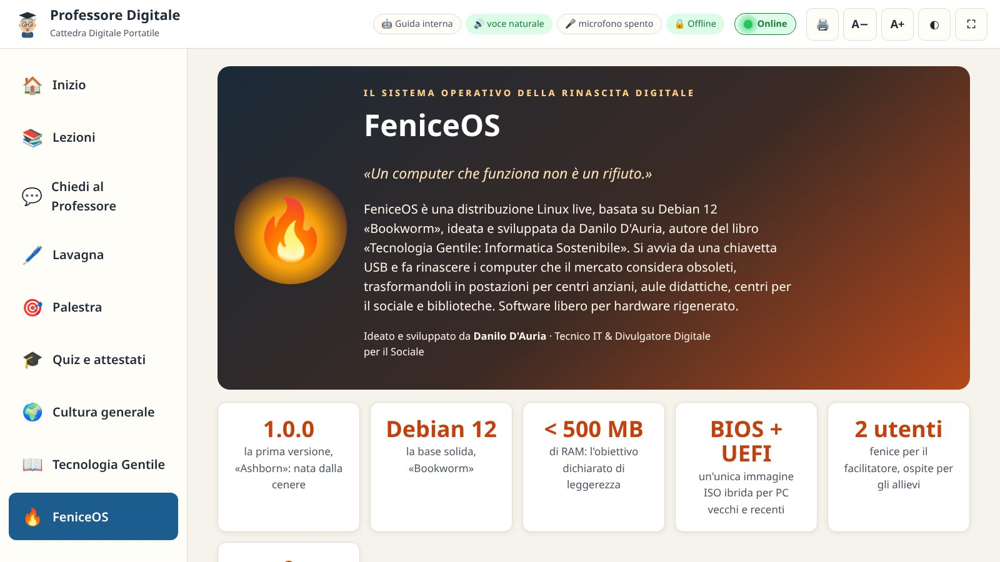
FeniceOS è una distribuzione Linux live, basata su Debian 12 «Bookworm», ideata e sviluppata da Danilo D'Auria. Si avvia da una chiavetta USB e fa rinascere i computer che il mercato considera obsoleti, trasformandoli in postazioni per centri anziani, aule, centri per il sociale e biblioteche. Un PC con Windows XP o Vista e almeno 1–2 GB di RAM, se ha un processore a 64 bit, può tornare sicuro e moderno con FeniceOS e usare il Professore per Linux (capitolo 21). La pagina contiene:
| I numeri | Versione 1.0.0 «Ashborn», base Debian 12, obiettivo di meno di 500 MB di RAM, un'unica immagine per BIOS e UEFI, due utenti (fenice per il facilitatore, ospite per gli allievi), zero telemetria. |
| Undici sezioni | Perché «Fenice», la filosofia della Tecnologia Gentile, economia circolare, obsolescenza programmata, cosa c'è dentro, come nasce l'immagine ISO, i due utenti, per chi è pensata, FeniceOS e Professore Digitale, privacy e sicurezza, come contribuire. Si raggiungono con l'indice in alto. |
| 💾 Provare FeniceOS dalla chiavetta | Nove passi, dal file ISO con la sua impronta alla scrittura della chiavetta (Rufus in modalità «DD Image» o balenaEtcher), dal menu di avvio (F12, F2, Esc o Canc) alle voci Safe Graphics e Zero-Disk, fino all'accesso come ospite o fenice. |
| 🖥️ Di cosa ha bisogno | Processore a 64 bit, memoria, avvio da USB, rete, stampanti, Internet, disco. |
| 📜 Il manifesto | I dieci principi della tecnologia gentile. |
| Lezioni, quiz e domande | 12 lezioni sul riuso, il Grande Quiz di FeniceOS e del Riuso (20 domande su 141, con attestato), 63 domande e risposte e 15 domande frequenti. |
Voci, saluti, promemoria, stampa e «Online»
Dalla versione 3.0 il Professore è più «presente»: parla con una voce maschile o femminile a scelta, vi accoglie quando aprite il programma, vi dà un consiglio se restate fermi, ricorda le vostre cose da fare e vi saluta quando uscite. Tutto si può spegnere in Impostazioni → Voce.
Le voci italiane, maschili e femminili
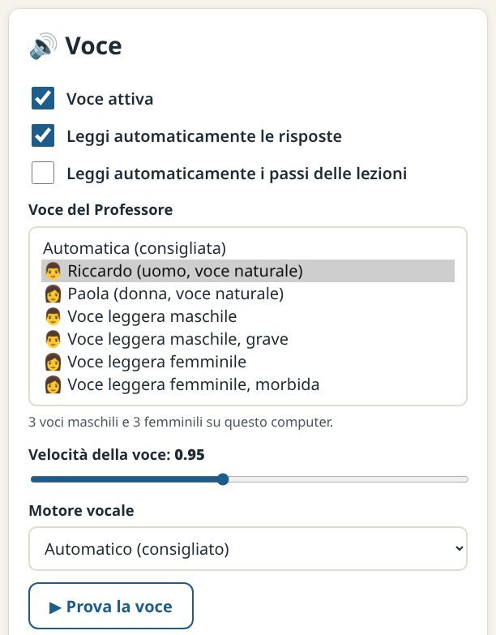
Nell'installatore sono già incluse due voci naturali italiane, che funzionano senza Internet:
- 👨 Riccardo, voce maschile: è la voce predefinita, perché il Professore è un uomo;
- 👩 Paola, voce femminile, morbida e chiara.
Si usano su Windows 7 e successivi a 64 bit. Nello stesso elenco compaiono anche tutte le voci italiane di Windows (per esempio «Microsoft Elsa», donna, e «Microsoft Cosimo», uomo), ciascuna con il suo genere. Sui Windows a 32 bit, su XP e su Vista si usano solo le voci di Windows.
Per cambiare voce: Impostazioni → Voce → Voce del Professore. Appena scelta, il Professore dice «Buongiorno! Questa è la mia nuova voce.». Con Automatica (consigliata) usa Riccardo, poi Paola, poi la voce di Windows. Sotto l'elenco si legge quante voci maschili e femminili ci sono sul computer.
Il saluto all'avvio
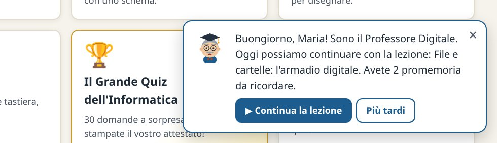
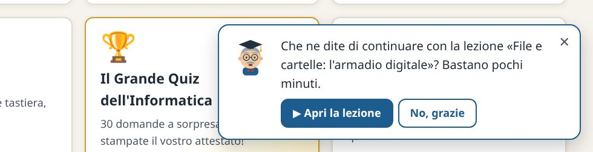
Quando aprite il programma, il Professore compare in una nuvoletta in basso a destra e saluta a voce secondo l'ora del computer: «Buongiorno» fino alle 13, «Buon pomeriggio» fino alle 18, poi «Buonasera», con il nome dell'allievo se è stato scritto. Propone la lezione da continuare (▶ Continua la lezione oppure Più tardi) e dice quanti promemoria avete. Se è molto tardi (dopo le 22) consiglia qualcosa di breve, e poi a riposare. Il saluto si fa una volta sola per finestra.
Su alcuni computer il browser permette di parlare solo dopo il primo clic: in quel caso il Professore saluta a voce appena toccate il mouse o la tastiera.
I consigli e l'attesa
Se nessuno usa il programma per qualche minuto (circa 3), il Professore propone un consiglio: continuare la lezione, provare il Grande Quiz, allenarsi in Palestra, scoprire la Cultura generale o FeniceOS, fare una domanda, alzarsi a sgranchire le gambe. Dopo altri minuti ne propone un secondo, diverso dal primo. I pulsanti della nuvoletta portano direttamente dove serve; No, grazie la chiude.
Dopo circa 10 minuti di silenzio dice «Mi metto in attesa» e socchiude gli occhi: In attesa… muovete il mouse per svegliarmi. Appena muovete il mouse o premete un tasto vi accoglie con «Bentornati!». Il Professore non interrompe mai mentre parla, mentre ascolta, durante un esercizio della Palestra o una stampa.

I promemoria
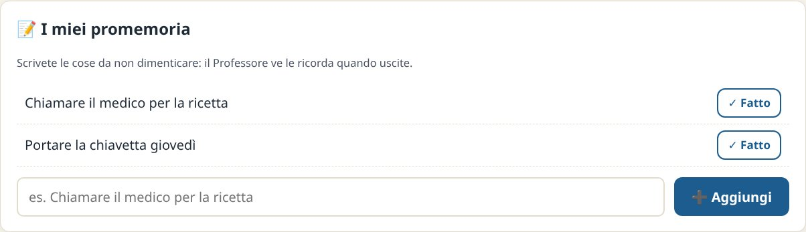
In fondo alla pagina Inizio, nel riquadro 📝 I miei promemoria, scrivete le cose da non dimenticare («Chiamare il medico per la ricetta», «Portare la chiavetta giovedì») e premete ➕ Aggiungi. Quando una cosa è fatta, premete ✓ Fatto e sparisce. Il Professore ricorda quanti promemoria ci sono quando saluta, ne cita uno tra i consigli e li legge tutti quando uscite.
Il pulsante 🚪 Esci
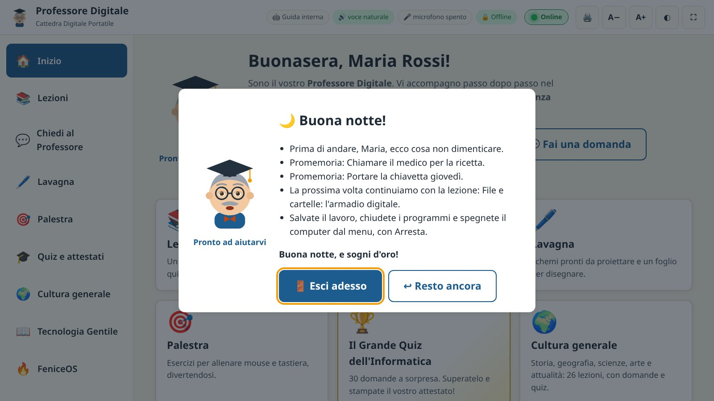
In fondo al menu a sinistra, 🚪 Esci apre una finestra di congedo: il Professore elenca i promemoria, ricorda la prossima lezione, consiglia di salvare il lavoro e spegnere il computer dal menu e saluta secondo l'ora («buona giornata», «buon pomeriggio», «buona serata» oppure, se è tardi, «Buona notte, e sogni d'oro!»). Con la voce attiva legge tutto e poi chiude il programma da solo; altrimenti premete 🚪 Esci adesso. ↩ Resto ancora annulla. Alla fine compare «Il Professore si è chiuso. Ora potete chiudere questa finestra».
Il pulsante 🖨️ Stampa

Il pulsante 🖨️ nella barra in alto apre un piccolo menu con due scelte:
- 🖥️ Stampa questa pagina: ciò che vedete, senza menu e pulsanti.
- 📄 Stampa l'argomento, quando la pagina ne ha uno: la lezione intera con tutti i passi, gli schemi e il quiz (soluzioni in fondo); tutta la conversazione in Chiedi al Professore; lezioni e domande di una materia di cultura, del libro o di FeniceOS; l'attestato.
Scorciatoia: Ctrl + Maiusc + P stampa subito l'argomento. Nella finestra di stampa potete anche scegliere «Salva come PDF».
L'indicatore «Online»
Accanto alle pastiglie in alto, ● Online si illumina di verde quando la connessione a Internet funziona davvero, ed è grigio con la scritta «Non in linea» quando manca: utile per capire in un attimo se si può navigare o se il router ha un problema. Il Professore funziona benissimo in entrambi i casi. Fate clic sull'indicatore per controllare subito.
Per saperlo, il programma prova al massimo una volta al minuto ad aprire e chiudere una connessione verso un server pubblico neutrale (come 1.1.1.1 o 9.9.9.9): nessun dato viene inviato. Chi preferisce che il computer resti del tutto silenzioso può spegnerlo in Impostazioni → Vista: l'indicatore diventa «Online: non controllato».
| Cosa spegnere | Dove |
|---|---|
| Saluto a voce all'avvio | Impostazioni → Voce → «Il Professore saluta a voce all'avvio» |
| Promemoria e saluto all'uscita | Impostazioni → Voce → «All'uscita ricorda i promemoria e saluta» |
| Consigli e attesa | Impostazioni → Voce → «Quando nessuno lo usa per un po', il Professore dà qualche consiglio…» |
| Indicatore «Online» | Impostazioni → Vista → «Indicatore «Online»» |
Impostazioni e accessibilità
Ogni gruppo è diverso. Le impostazioni adattano la Cattedra alla vista, all'udito e al ritmo di chi la usa. Le scelte vengono salvate e ritrovate al prossimo avvio.
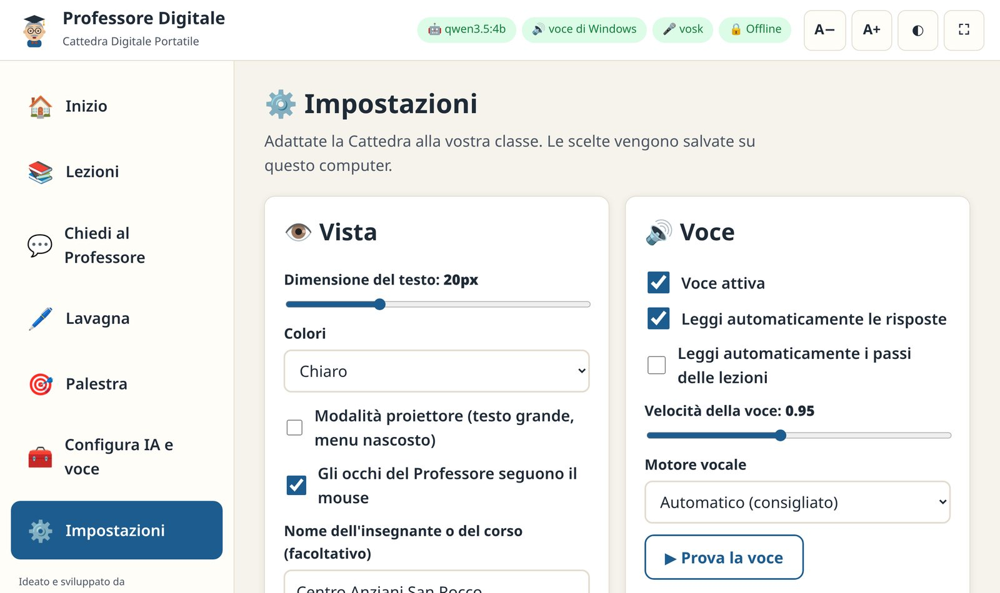
👁️ Vista
- Dimensione del testo da 14 a 34 punti (anche con A− / A+ in alto).
- Colori: chiaro, scuro (riposante la sera o nelle stanze buie), alto contrasto giallo su nero per chi vede poco.
- Modalità proiettore: testo grande e menu nascosto.
- Gli occhi del Professore seguono il mouse: attivo di serie; spegnetelo se distrae.
- Indicatore «Online»: attivo di serie; spegnetelo se non volete nessun controllo della connessione (capitolo 12).
- Nome dell'allievo: per i saluti e gli attestati. Nome dell'insegnante o del corso (facoltativo): firma gli attestati e viene comunicato all'IA.
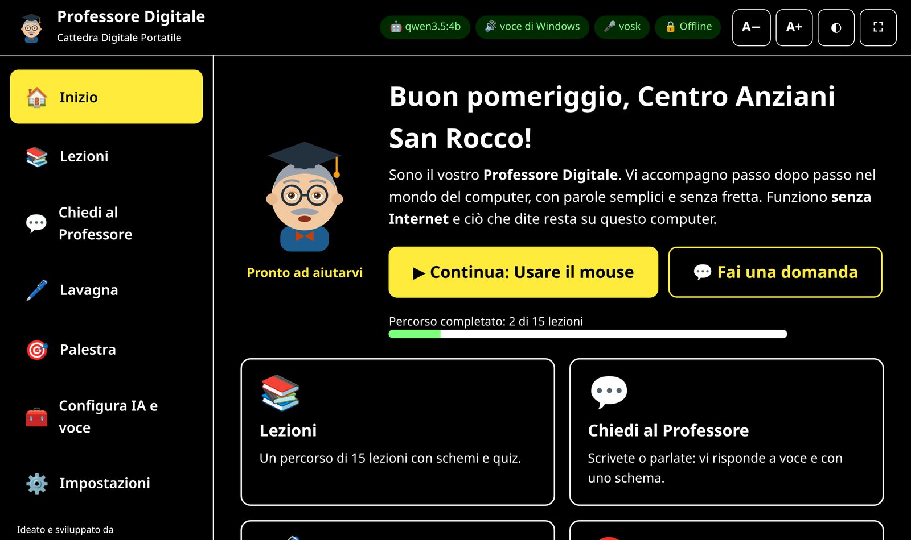

🔊 Voce
- Voce attiva: l'interruttore generale. Leggi automaticamente le risposte (attivo di serie) e i passi delle lezioni (spento di serie).
- Voce del Professore: Riccardo, Paola o una voce di Windows, maschile o femminile (capitolo 12).
- Velocità da 0,60 a 1,40. Per le persone anziane si consiglia tra 0,85 e 0,95.
- Motore vocale: «Automatico» usa le voci del computer e, in mancanza, la voce del browser. ▶ Prova la voce controlla volume e velocità.
- Saluto all'avvio, promemoria e saluto all'uscita, consigli e attesa: tre interruttori, tutti attivi di serie.
🤖 Intelligenza artificiale e 🎤 microfono
Mostrano se l'IA (Ollama o il motore compatibile) e il riconoscimento vocale sono attivi, quale modello è in uso e quale è consigliato. Se qualcosa manca, un collegamento porta a Configura IA e voce. Si può spegnere l'IA (per usare solo la guida interna) e decidere se inviare subito la domanda dopo aver parlato. 🔄 Ricontrolla i componenti aggiorna lo stato dopo un'installazione.
📦 Dati e progressi
Esporta progressi salva un file professore-digitale-progressi.json nella cartella Download, con lezioni, risultati dei quiz, attestati,
record della Palestra e promemoria; Importa lo ricarica (anche su un altro computer, anche Linux); Azzera progressi ricomincia il percorso e chiede
una seconda conferma. 📂 Cartella dei progressi la apre in Esplora file.
🧩 Contenuti aggiuntivi, 🔄 Aggiornamenti e 🩺 Diagnostica
Si possono importare pacchetti di domande, lezioni e quiz (file .json) senza reinstallare: l'elenco mostra anche i pacchetti già inclusi
(cultura, libro, FeniceOS, Grande Quiz). Il controllo degli aggiornamenti parte solo premendo il pulsante: se c'è una versione nuova il Professore la scarica,
ne verifica l'impronta e propone ▶ Installa adesso (capitolo 18). La Diagnostica riassume lo stato del sistema: utile da copiare quando si chiede aiuto.
IA, microfono e voce: la configurazione automatica
Il programma di base è completo, e sui Windows a 64 bit ha già le voci naturali Riccardo e Paola. Due componenti facoltativi lo arricchiscono: l'intelligenza artificiale locale e il microfono. Il Professore esamina il computer, sceglie la combinazione migliore e installa tutto con un clic. Internet serve solo in quel momento.
Si apre dal menu a sinistra (🧰 Configura IA e voce), dal menu Start → Professore Digitale → Configura IA e voce o dall'icona vicino all'orologio.
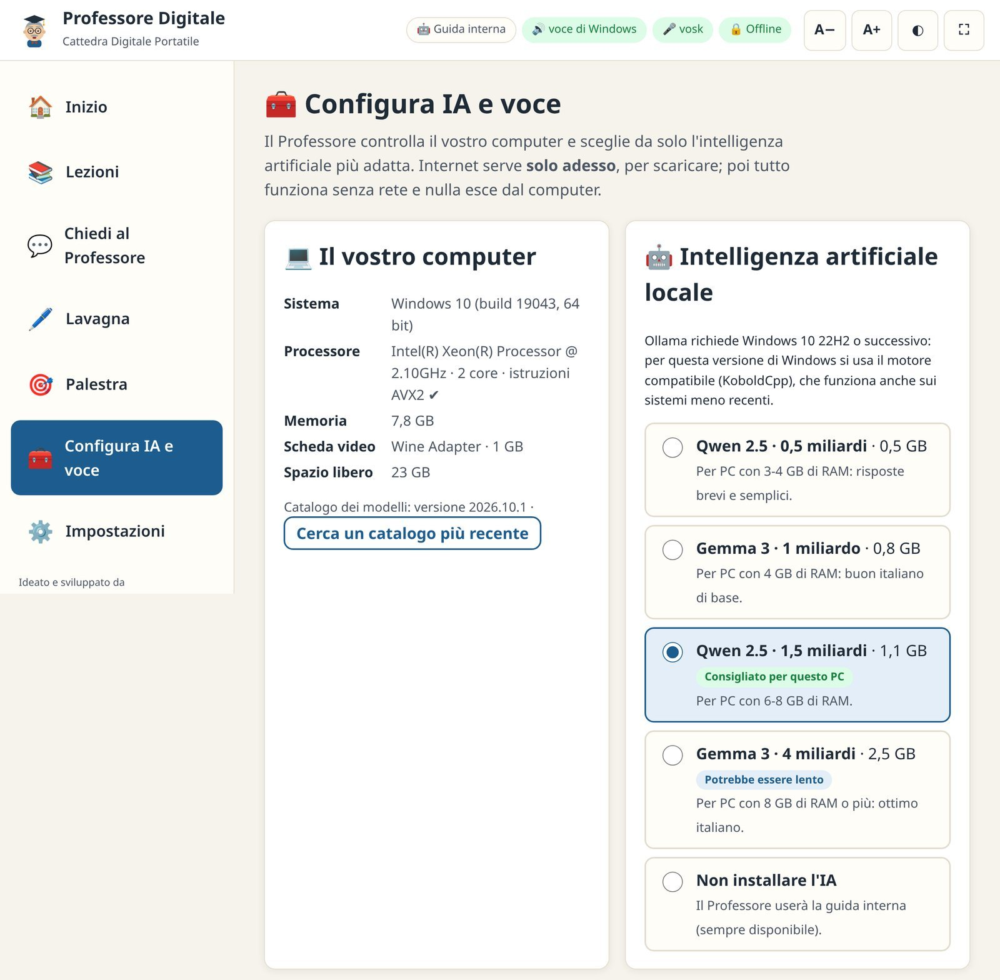
1 · L'esame del computer
Il Professore legge, senza inviare nulla a nessuno:
| Cosa controlla | Perché conta |
|---|---|
| Versione di Windows (con aggiornamento, es. 22H2) e 32/64 bit | Decide il motore: Ollama richiede Windows 10 22H2 o 11 a 64 bit; i Windows più vecchi a 64 bit usano il motore compatibile; XP, Vista e i 32 bit usano la guida interna. |
| Memoria (RAM) | Il modello deve starci comodo insieme a Windows e al browser. |
| Processore: core e istruzioni AVX/AVX2 | Senza AVX2 o con meno di 4 core i modelli grandi sarebbero troppo lenti: si scelgono quelli adatti ai «PC lenti». |
| Scheda video e sua memoria (VRAM) | Una scheda NVIDIA o AMD con almeno 6–8 GB fa correre modelli più grandi anche con poca RAM. |
| Spazio libero sul disco | Il modello scelto deve entrarci con margine. |
2 · La scelta del modello
Tra i modelli del catalogo il Professore propone il più capace che quel computer può far funzionare con risposte rapide. Gli altri restano sceglibili a mano, con un'etichetta: «Consigliato per questo PC», «Potrebbe essere lento», «Troppo grande per questo PC».
Windows 10 22H2 e Windows 11 · motore Ollama
| Modello | Dimensione | Scelto quando il PC ha… |
|---|---|---|
Qwen 3.5 · 0,8 miliardi qwen3.5:0.8b | 1 GB | 4–5 GB di RAM, processori datati |
Qwen 3.5 · 2 miliardi qwen3.5:2b | 2,7 GB | 6–8 GB di RAM, oppure scheda video da 3 GB |
Qwen 3.5 · 4 miliardi qwen3.5:4b | 3,4 GB | 8–16 GB di RAM e processore moderno, oppure scheda video da 5 GB |
Qwen 3.5 · 9 miliardi qwen3.5:9b | 6,6 GB | 16 GB di RAM, oppure scheda video da 8 GB |
Gemma 4 · 12 miliardi gemma4:12b | 8 GB | 24–32 GB di RAM, oppure scheda video da 10–12 GB |
| Alternative da scegliere a mano: Gemma 3 · 1 miliardo (leggero), Ministral 3 · 3 miliardi (italiano molto naturale), Gemma 3 · 4 miliardi. | ||
Windows 7, 8, 8.1 (64 bit) · motore compatibile KoboldCpp
| Modello | Dimensione | Scelto quando il PC ha… |
|---|---|---|
| Qwen 2.5 · 0,5 miliardi | 0,5 GB | 3–4 GB di RAM |
| Gemma 3 · 1 miliardo | 0,8 GB | 4–5 GB di RAM |
| Qwen 2.5 · 1,5 miliardi | 1,1 GB | 6–8 GB di RAM |
| Gemma 3 · 4 miliardi | 2,5 GB | 8 GB di RAM o più, processore con AVX2 |
3 · Un clic: «Configura automaticamente»
- Motore. Se Ollama manca, il Professore scarica il suo installatore ufficiale e lo installa in silenzio nella cartella dell'utente (non serve la password). Sui Windows più vecchi scarica il motore compatibile.
- Modello. Scarica il modello scelto, mostrando la barra di avanzamento. Con un collegamento domestico servono da pochi minuti (modelli piccoli) a mezz'ora (i più grandi).
- Microfono e voci. Se avete lasciato la spunta, scarica il modello italiano per il riconoscimento vocale (circa 50 MB). Le voci naturali Riccardo e Paola sono già incluse nel programma: il Professore lo segnala e salta il passo.
- Verifica. Ogni file viene controllato con la sua impronta digitale SHA-256 (quando la fonte la pubblica) e con il controllo di integrità degli archivi.
- Prova. Il Professore fa una domanda di prova in italiano al modello e mostra la risposta. Da quel momento il computer può restare scollegato.
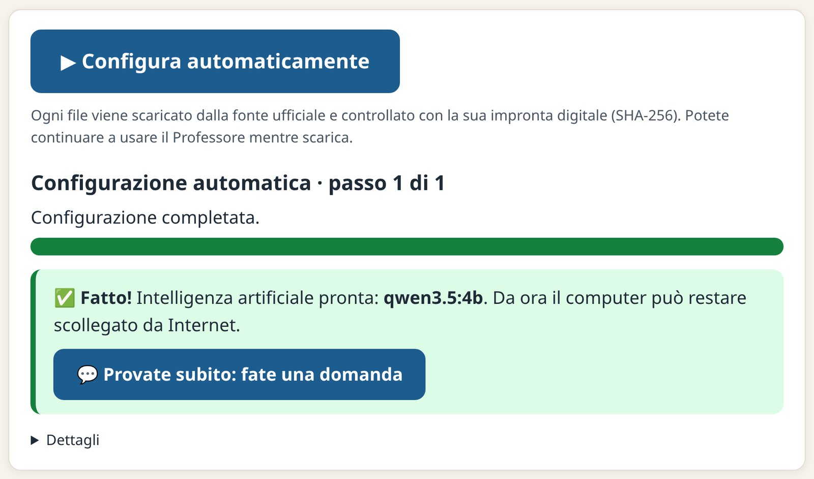
Potete continuare a usare il Professore mentre scarica. Il pulsante ■ Annulla interrompe; ripetendo, i file già scaricati e verificati non vengono riscaricati.
Le voci
Sui Windows a 64 bit le voci naturali Riccardo e Paola arrivano con l'installatore. Il Professore può usare anche le voci italiane di Windows: su Windows 10 e 11 in italiano di solito c'è già «Microsoft Elsa»; per aggiungerne altre, anche maschili: Start → Impostazioni → Ora e lingua → Voce → Aggiungi voci → Italiano. Le nuove voci compaiono in Impostazioni → Voce dopo aver riavviato il Professore.
Aule senza Internet: la chiavetta
Per i computer che non si collegheranno mai alla rete, preparate tutto una volta su un PC collegato e portatelo con una chiavetta (servono 2–10 GB secondo il modello).
- Sul PC collegato, in Configura IA e voce → Computer senza Internet, scegliete che Windows hanno i PC di destinazione, il modello e i componenti.
- Premete 💾 Prepara la chiavetta e scegliete la chiavetta nella finestra di Windows. Il Professore crea la cartella
ProfessoreDigitale-kitcon i file, un elencokit.jsoncon le impronte di ciascuno e unLEGGIMI.txt. Copiate sulla chiavetta anche l'installatore del Professore. - Su ogni PC senza rete: installate il Professore, aprite Configura IA e voce, premete 📥 Installa dalla chiavetta e scegliete la cartella
ProfessoreDigitale-kit. Ogni file viene verificato prima di essere installato: un file rovinato viene rifiutato con una spiegazione.
Per preparare un modello Ollama il PC collegato deve avere Windows 10 22H2 o 11 (il modello viene scaricato lì e poi copiato). Per i PC con Windows 7 e 8 scegliete «Windows 7, 8 o 8.1»: la chiavetta conterrà il motore compatibile e il suo modello.
Togliere i componenti
In fondo alla pagina, Togli l'IA, Togli il microfono e Togli la voce naturale liberano spazio: il Professore continua con la guida interna e la voce di Windows. Ollama, se installato, è un programma a sé: si toglie da Impostazioni di Windows → App (o Pannello di controllo → Programmi).
Il quadro dell'aula
Con il menu 🏫 Aula il PC del facilitatore vede in tempo reale i PC degli allievi collegati alla stessa rete (Wi-Fi o cavo): chi c'è, cosa sta facendo, a che punto è con le lezioni, i quiz e gli attestati. Può anche mandare un messaggio a tutti. Internet non serve: i dati restano nella rete dell'aula.

I tre ruoli
| Ruolo | Cosa fa | |
|---|---|---|
| 🧑🏫 | Il PC del facilitatore | Riceve i progressi degli allievi e mostra il quadro dell'aula. Ce n'è uno per aula. |
| 🧑🎓 | Il PC di un allievo | Si collega da solo al PC del facilitatore e gli invia nome, attività e progressi. |
| 💻 | Un PC senza aula | Nessun collegamento: tutto resta su questo computer. È la scelta di serie. |
Preparare il PC del facilitatore
- Aprite 🏫 Aula e scegliete «Il PC del facilitatore».
- Scrivete il nome dell'aula (per esempio «Aula del Centro anziani») e il codice dell'aula: 🎲 Nuovo codice ne propone uno di quattro cifre (fino a otto). Solo i PC che conoscono il codice possono collegarsi; lasciandolo vuoto si accettano tutti i PC della rete.
- Premete 💾 Salva e applica. Nel riquadro «Questo PC» controllate che In ascolto per gli allievi sia ✅ (porta 8766) e Ricerca automatica ✅ attiva. Se compare ❌ «porta occupata o bloccata dal firewall», leggete il riquadro «Il firewall di Windows» qui sotto.
Collegare i PC degli allievi
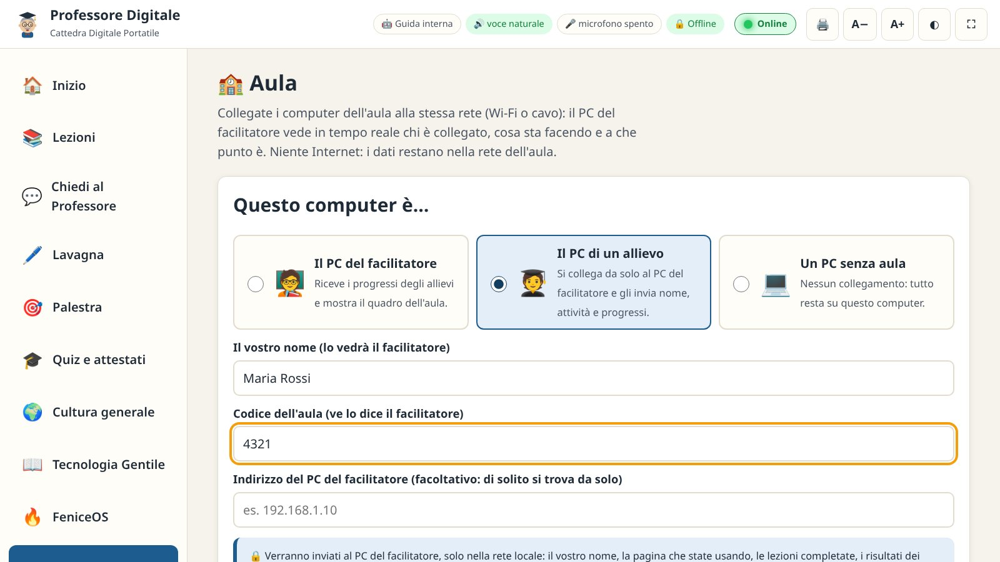
- Su ogni PC degli allievi aprite 🏫 Aula e scegliete «Il PC di un allievo».
- Scrivete il nome dell'allievo e il codice dell'aula detto dal facilitatore.
- Premete 💾 Salva e applica. Il PC cerca da solo quello del facilitatore; dopo pochi secondi compare
«✅ Collegato al PC del facilitatore». Se non lo trova, scrivete il suo indirizzo (lo vedete nel riquadro «Questo PC», per esempio
192.168.1.10).
Il PC dell'allievo invia un breve riepilogo ogni 20 secondi e, quando cambia pagina, entro pochi secondi. 🔄 Invia adesso lo manda subito.
Il quadro

- I numeri: allievi collegati ora, PC visti in aula, lezioni completate e attestati ottenuti da tutto il gruppo.
- Gli allievi: per ognuno un pallino verde se è collegato (grigio se non lo è più), il nome (con «😴 inattivo da N min» se è fermo da più di 5 minuti), cosa sta facendo (per esempio «Lezione: Riconoscere le truffe online (passo 3)» o il quiz in corso), le lezioni completate con la barra, quiz e attestati con il miglior risultato, il computer (nome, sistema, memoria, IA e microfono, un avviso se ha una versione diversa del Professore) e l'ultimo contatto con l'indirizzo. Il pulsante ✕ toglie un PC dall'elenco.
- 📣 Messaggio a tutti gli allievi: scrivete, per esempio, «Tra cinque minuti facciamo una pausa» e premete 📣 Invia. Entro pochi secondi il messaggio compare su ogni PC nella nuvoletta del Professore, letto a voce, con il pulsante Ho capito.
- ⬇️ Esporta elenco: salva nella cartella Download il file
aula-AAAA-MM-GG.csv, che si apre con Excel o LibreOffice Calc: allievo, computer, sistema, attività, lezioni, quiz, attestati e ultimo contatto. Utile per il registro del corso. - 🧹 Togli i PC non collegati: ripulisce l'elenco a fine giornata.
🔍 Cerca nella rete
In fondo alla pagina, su qualunque PC, 🔍 Cerca nella rete mostra l'indirizzo di questo computer, se Internet è collegato, i PC dei facilitatori trovati (nome, computer, indirizzo, versione, se serve il codice) e il server degli aggiornamenti dell'aula, se c'è. È il primo controllo quando un allievo non si collega.
.html.Guida per il facilitatore
Il Professore Digitale non sostituisce il facilitatore: gli dà una lavagna, una voce in più, un percorso già pronto, i quiz con gli attestati e, con l'aula, uno sguardo d'insieme sul gruppo. Ecco come ottenere il meglio da un incontro con computer Windows.
Preparare l'aula
- Computer accesi prima dell'arrivo del gruppo: Windows Update a volte installa aggiornamenti all'accensione.
- Professore aperto e testo ingrandito (A+).
- Voce scelta (Riccardo o Paola) e volume provato con ▶ Prova la voce.
- Il vostro PC impostato come facilitatore in 🏫 Aula, codice dell'aula scritto alla lavagna.
- PC degli allievi collegati all'aula (✅ Collegato).
- Proiettore collegato (Windows + P → Duplica) e modalità proiettore attiva.
- Mouse con filo (più facili dei touchpad).
- Cuffie per chi sente poco.
- Un foglio con nome utente e password (o PIN) di ogni PC.
- Risparmio energia: schermo che non si spegne durante la lezione.
- Stampante pronta per gli attestati.
- Questo vademecum stampato, a portata di mano.
Un incontro tipo (90 minuti)
| Tempo | Attività |
|---|---|
| 0–10' | Accoglienza. Caffè, nomi, cosa è successo in settimana con il telefono o il computer: spesso le domande migliori nascono qui. Il Professore saluta ciascuno sul proprio PC. |
| 10–20' | Riscaldamento in Palestra. Esercizio del clic, dei tasti speciali o «Riconosci la truffa»; ognuno annota il proprio record. |
| 20–50' | La lezione del giorno, proiettata. Il facilitatore legge o fa leggere il Professore, un passo alla volta, fermandosi sulle domande. |
| 50–60' | Pausa (con un 📣 messaggio a tutti per avvisare). |
| 60–75' | Pratica a coppie sui PC: ripetere i passi della lezione (salvare un file, scrivere un'email…). Dal quadro dell'aula vedete chi è rimasto indietro. |
| 75–85' | Quiz insieme, proiettato: il gruppo vota a voce, poi si legge la spiegazione. A fine percorso: il Grande Quiz individuale e gli attestati. |
| 85–90' | Domande libere in «Chiedi al Professore», un promemoria per la volta dopo e saluti con 🚪 Esci. |
Dieci consigli per insegnare agli adulti e agli anziani
- Mani sul mouse loro, non vostre. Guidate a parole; toccate il mouse solo se chiesto.
- Una cosa alla volta. Un passo, una prova, un sorriso. Poi il passo successivo.
- Metafore concrete: il Professore ne usa molte (l'armadio, la strada, la chiave); riprendetele e aggiungete le vostre.
- L'errore è benvenuto. Mostrate Ctrl + Z e il Cestino fin dal primo giorno.
- Ripetere senza stancarsi. Rivedere una lezione è normale: i passi già visti restano segnati in verde.
- Testo grande e voce lenta. Regolateli all'inizio, non a metà incontro.
- Partite dai loro bisogni: la videochiamata con il nipote motiva più di qualsiasi teoria. La Cultura generale aiuta chi ha paura del computer: si esercita senza accorgersene.
- Sicurezza sempre. Ripetete la regola d'oro: nessuno chiede password o codici per telefono. Microsoft non telefona mai.
- Scrivere su carta i passaggi chiave: molti allievi ricordano meglio con un foglio accanto. Il pulsante 🖨️ stampa la lezione intera.
- Celebrare i progressi. I record della Palestra, le lezioni completate e gli attestati sono piccoli traguardi da festeggiare.
Più allievi sullo stesso computer
I progressi appartengono all'utente di Windows. Se più persone usano lo stesso PC, create un account per ciascuna (Start → Impostazioni → Account → Altri utenti) e installate il Professore «per tutti gli utenti»; oppure usate Esporta progressi a fine incontro e Importa la volta dopo. Con la versione da chiavetta ogni allievo può portarsi il proprio percorso in tasca. Ricordate di cambiare il nome dell'allievo in Impostazioni → Vista, perché compare nei saluti, negli attestati e nel quadro dell'aula.
Privacy e sicurezza
Chi impara a usare il digitale deve poter sbagliare e fare domande senza timore. Per questo il Professore è costruito in modo da non far uscire nulla dal computer.
Cosa fa il programma
- Il server interno ascolta solo all'interno del computer (127.0.0.1): dagli altri computer della rete l'interfaccia non è raggiungibile.
- Accetta richieste solo dalla propria finestra: una pagina web estranea non può comandarlo.
- IA, voci e riconoscimento vocale lavorano sul computer: domande e registrazioni non vengono inviate a nessuno. Le registrazioni del microfono vengono trascritte e cancellate subito.
- Gli attestati in PDF si creano sul computer, senza servizi esterni.
- Non richiede privilegi di amministratore durante l'uso.
- Ogni file scaricato su vostra richiesta (aggiornamenti, modelli, microfono) viene verificato con la sua impronta SHA-256.
Le due eccezioni, dichiarate e disattivabili
| Funzione | Cosa fa in rete | Come si spegne |
|---|---|---|
| Indicatore «Online» | Al massimo una volta al minuto il programma apre e chiude una connessione verso un server pubblico neutrale (1.1.1.1, 9.9.9.9…) per sapere se Internet funziona. Nessun dato viene inviato. | Impostazioni → Vista → «Indicatore «Online»» |
| Quadro dell'aula | Solo se scegliete un ruolo in 🏫 Aula. Il PC del facilitatore ascolta nella rete locale soltanto due indirizzi (/aula/info e
/aula/ciao, porta 8766 TCP) e risponde alla ricerca dei PC (porta 8767 UDP). Il PC dell'allievo invia ogni 20 secondi nome, pagina in uso,
lezioni completate, risultati dei quiz e attestati: mai le conversazioni. Solo indirizzi IP privati; il codice dell'aula blocca i PC estranei. |
🏫 Aula → «Un PC senza aula» (è la scelta di serie) |
Cosa non fa
- Non crea account e non chiede dati personali (il nome per saluti e attestati è facoltativo e resta sul computer).
- Non contiene pubblicità né sistemi di tracciamento.
- Non scarica nulla da solo, nemmeno gli aggiornamenti.
Dove stanno i dati
| Dato | Posizione |
|---|---|
| Impostazioni, progressi (lezioni, quiz, attestati, Palestra, promemoria), conversazione (ultimi 60 messaggi), lavagna | %APPDATA%\ProfessoreDigitale\(Windows XP: Documents and Settings\NOME\Dati applicazioni\ProfessoreDigitale) |
| Pacchetti di contenuti importati | %APPDATA%\ProfessoreDigitale\contenuti\ |
Modelli vocali, IA compatibile, registro tecnico (server.log) | %LOCALAPPDATA%\ProfessoreDigitale\ |
| Modelli di Ollama | %USERPROFILE%\.ollama\models\ (gestiti da Ollama) |
| Elenco degli allievi dell'aula (solo sul PC del facilitatore) | %APPDATA%\ProfessoreDigitale\; si svuota con 🧹 e ✕ |
| Versione da chiavetta | Cartella dati accanto a ProfessoreDigitale.exe |
Versione portatile .html | Memoria del browser di quel computer |
Per aprire una di queste cartelle, scrivete il percorso (per esempio %APPDATA%\ProfessoreDigitale) nella barra degli indirizzi di Esplora file
e premete Invio, oppure usate «Cartella dei progressi» dall'icona vicino all'orologio. Sono semplici file di testo, leggibili e cancellabili.
Manutenzione, aggiornamenti e disinstallazione
Salvare i progressi
In Impostazioni → Dati e progressi → Esporta progressi si ottiene un file da conservare su chiavetta, con lezioni, quiz, attestati e promemoria.
Per un salvataggio completo di un utente basta copiare la cartella %APPDATA%\ProfessoreDigitale. Gli attestati salvati in PDF stanno nella cartella Download.
Aggiornare
- In Impostazioni → Aggiornamenti premete 🌐 Controlla aggiornamenti (serve Internet in quel momento, oppure un PC dell'aula che fa da server).
- Se c'è una versione nuova, leggete le novità e premete ⬇️ Scarica il nuovo pacchetto: il file va nella cartella Download e viene verificato.
- Premete ▶ Installa adesso: il Professore si chiude, l'installatore aggiorna il programma e potete riaprirlo. Impostazioni e progressi vengono conservati.
Senza Internet basta eseguire il nuovo ProfessoreDigitale-Setup-X.Y.Z.exe portato con la chiavetta: si installa sopra il precedente.
Nella stessa scheda si possono aggiungere i nuovi contenuti (domande, lezioni e quiz) con un clic, senza aggiornare il programma.
Ripristino dopo un problema
Se dopo un'interruzione di corrente il Professore non si comporta bene: tasto destro sull'icona vicino all'orologio → Chiudi il Professore Digitale, poi riapritelo. Se non basta, eseguite di nuovo l'installatore: ripara i file del programma senza toccare i dati. Se il microfono smette di funzionare, toglietelo e reinstallatelo da Configura IA e voce.
Disinstallazione
- Start → Impostazioni → App (o Pannello di controllo → Programmi e funzionalità), scegliete Professore Digitale → Disinstalla. In alternativa: Start → Professore Digitale → Disinstalla Professore Digitale.
- Il programma viene chiuso e rimosso con le sue icone, le voci incluse e la regola del firewall per l'aula.
- Alla domanda «Volete cancellare anche i progressi…» rispondete Sì per restituire il computer «come nuovo» (prima di una donazione), No se pensate di reinstallare.
La pulizia riguarda l'utente di Windows che disinstalla: per gli altri utenti cancellate a mano le loro cartelle
%APPDATA%\ProfessoreDigitale. - Facoltativo: Ollama si toglie da Impostazioni → App; i suoi modelli stanno in
%USERPROFILE%\.ollama.
Risoluzione dei problemi
Prima di tutto: Impostazioni → Diagnostica mostra cosa è attivo e cosa no; il registro tecnico è in %LOCALAPPDATA%\ProfessoreDigitale\server.log.
| Sintomo | Causa probabile | Rimedio |
|---|---|---|
| «Windows ha protetto il PC» | SmartScreen, programma senza firma a pagamento | Ulteriori informazioni → Esegui comunque (capitolo 3). |
| Doppio clic sull'icona e non succede nulla | PC lento o browser mancante | Aspettate 30 secondi. Guardate se c'è l'icona vicino all'orologio e fateci clic. Installate o aggiornate Edge, Chrome o Firefox (su XP/Vista Supermium). |
| Si apre una pagina con «browser troppo vecchio» | Si è aperto Internet Explorer | Installate un browser moderno (capitolo 2, su XP e Vista capitolo 21) e riaprite il Professore. |
| Si apre il browser con barre e schede | C'è solo Firefox | È normale: funziona tutto. Per una finestra pulita usate Edge o Chrome. |
| Il Professore non parla | Volume, voce spenta, nessuna voce | Controllate il volume (icona dell'altoparlante). In Impostazioni: «Voce attiva» e «Prova la voce». Sui Windows a 32 bit aggiungete la voce italiana di Windows (capitolo 14). |
| Nell'elenco delle voci mancano Riccardo e Paola | Windows a 32 bit, XP o Vista, oppure voci non installate | Le voci naturali richiedono Windows 7 o successivo a 64 bit. Sui 64 bit rieseguite l'installatore lasciando la spunta «Voci naturali». |
| Parla con accento inglese | Windows non ha una voce italiana | Scegliete Riccardo o Paola in Impostazioni → Voce, oppure Impostazioni di Windows → Ora e lingua → Voce → Aggiungi voci → Italiano. |
| All'avvio il saluto si vede ma non si sente | Il browser permette la voce solo dopo un clic | È normale su alcuni browser: il Professore parla appena toccate il mouse o la tastiera. |
| I consigli o il saluto disturbano la lezione | Funzioni attive di serie | Impostazioni → Voce: spegnete «saluta a voce all'avvio» e/o «dà qualche consiglio». |
| L'indicatore «Online» è sempre grigio | Niente Internet, firewall che blocca, oppure controllo spento | Fate clic sull'indicatore per riprovare. Se dice «non controllato», riattivatelo in Impostazioni → Vista. Il Professore funziona comunque. |
| «Salva in PDF» dell'attestato non funziona | Browser molto vecchio | Premete 🖨️ Stampa e nella finestra di stampa scegliete Salva come PDF (o «Microsoft Print to PDF»). |
| L'allievo non si collega all'aula: «nessun PC del facilitatore trovato» | Reti diverse, firewall, codice sbagliato | Stessa rete per tutti (stesso Wi-Fi). Sul facilitatore controllate «In ascolto ✅». Scrivete a mano l'indirizzo del facilitatore e ricontrollate il codice. Usate 🔍 Cerca nella rete. |
| Sul facilitatore: «porta occupata o bloccata dal firewall» | Regola del firewall mancante o altro programma sulla porta 8766 | Reinstallate «per tutti gli utenti» (aggiunge la regola) oppure consentite l'accesso quando Windows lo chiede. Riavviate il Professore. |
| Il microfono è grigio | Riconoscimento vocale non installato, o Windows a 32 bit | Configura IA e voce, spunta «Microfono», poi Ricontrolla i componenti. |
| «Non ho sentito nulla» | Microfono muto, lontano o non consentito | Impostazioni di Windows → Privacy → Microfono: consentite l'accesso alle app e al browser. Controllate il livello in Audio → Input. Parlate a 20–30 cm. |
| Risponde sempre la «Guida interna» | IA spenta o non configurata, Ollama fermo | Impostazioni → «Usa l'IA» attivo. Se Ollama è installato ma fermo, riavviate il computer o aprite Ollama dal menu Start. Altrimenti Configura IA e voce. |
| L'IA è lentissima | Modello troppo grande per il PC | In Configura IA e voce scegliete il modello «Consigliato» o uno più piccolo. Chiudete gli altri programmi. |
| La configurazione si ferma con «connessione sicura non riuscita» | Windows 7 senza aggiornamenti TLS 1.2, oppure XP/Vista | Su Windows 7 installate gli aggiornamenti di Windows (in particolare KB3140245) o usate la chiavetta preparata su un altro PC. |
| «Spazio insufficiente» | Disco pieno | Liberate spazio (Pulizia disco) o scegliete un modello più piccolo. |
| L'antivirus blocca il motore compatibile | Falso allarme su programmi poco diffusi | Il file è verificato con la sua impronta: aggiungete un'eccezione per la cartella %LOCALAPPDATA%\ProfessoreDigitale\ia, oppure usate solo la guida interna. |
| Lo schema non si disegna | Schema dell'IA non valido | Compare comunque la descrizione testuale. Rifate la domanda o chiedete «fammi uno schema semplice». |
| Le icone appaiono come quadratini | Windows 7 o XP senza caratteri emoji | Solo un difetto estetico: le funzioni restano tutte. Su Windows 7 aiuta l'aggiornamento KB2729094. |
| Ho perso i progressi della versione portatile | La memoria del browser è stata cancellata | Usate regolarmente Esporta progressi; con il programma installato i progressi stanno in un file su disco. |
Riferimento rapido
Il programma
| Comando (da Esegui, Windows + R, o da un collegamento) | Funzione |
|---|---|
ProfessoreDigitale.exe | Apre il Professore (o la finestra già attiva) |
ProfessoreDigitale.exe --configura | Apre «Configura IA e voce» |
ProfessoreDigitale.exe --status | Stato di IA, voci, microfono e del computer (da Prompt dei comandi) |
ProfessoreDigitale.exe --stop | Chiude il Professore |
ProfessoreDigitale.exe --version | Versione installata |
ProfessoreDigitale.exe --port 9000 | Usa un'altra porta interna (se la 8765 è occupata ne viene scelta un'altra da sola) |
ProfessoreDigitale.exe --idle-timeout 0 | Non spegnersi mai da solo (per i PC che fanno da postazione fissa, per esempio quello del facilitatore) |
L'installatore
/S | Installazione silenziosa |
/AllUsers · /CurrentUser | Per tutti gli utenti (amministratore, con regola del firewall per l'aula) · solo per l'utente attuale |
Disinstalla.exe /S | Disinstallazione silenziosa (nella cartella del programma) |
Rete e aula
127.0.0.1:8765 | Interfaccia del Professore, solo dentro il computer |
| 8766 TCP · 8767 UDP | Quadro dell'aula, solo rete locale, solo sul PC del facilitatore e solo se attivato |
| «Professore Digitale (aula)» | Nome della regola nel firewall di Windows (installazione per tutti gli utenti) |
Variabili d'ambiente (per tecnici)
PD_BROWSER | Browser da usare: nome (firefox, chrome, msedge) o percorso completo dell'exe |
OLLAMA_HOST | Indirizzo del servizio Ollama (predefinito http://127.0.0.1:11434) |
OLLAMA_MODELS | Cartella dei modelli di Ollama (per metterli su un altro disco) |
Cartelle
| Programma | C:\Program Files (x86)\ProfessoreDigitale (per tutti) o %LOCALAPPDATA%\Programs\ProfessoreDigitale (solo per me) |
| Interfaccia, contenuti, voci incluse | …\ProfessoreDigitale\web\, …\contenuti\, …\piper\ e …\voci\ |
| Contenuti per tutti gli utenti | %ProgramData%\ProfessoreDigitale\contenuti\ |
| Dati dell'utente | %APPDATA%\ProfessoreDigitale\ e %LOCALAPPDATA%\ProfessoreDigitale\ |
| Attestati in PDF, elenco dell'aula, disegni | Cartella Download |
Scorciatoie da tastiera
| Esc | Ferma la voce |
| Invio | Invia la domanda |
| Maiusc + Invio | A capo nella domanda |
| Tab | Passa al pulsante successivo |
| Ctrl + + / − | Zoom |
| F11 | Schermo intero |
| Ctrl + P | Stampa la pagina |
| Ctrl + Maiusc + P | Stampa l'argomento intero |
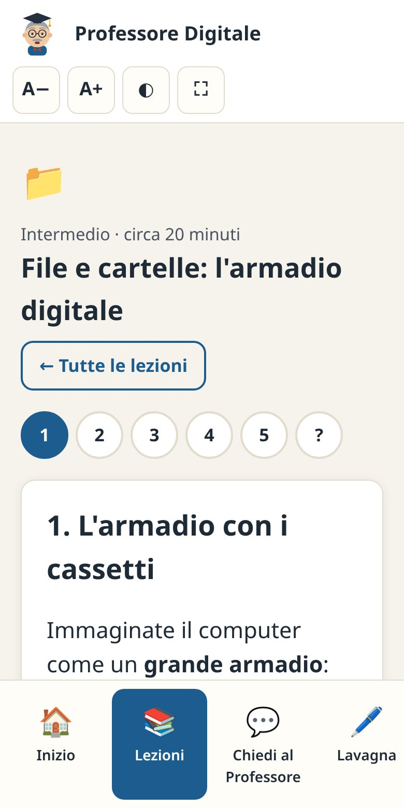
Windows XP e Vista
Molti centri e famiglie hanno ancora computer con Windows XP o Vista che funzionano benissimo. Il Professore gira anche lì, con qualche attenzione: lezioni, quiz e attestati, cultura generale, guida interna, lavagna, palestra e voce di Windows sono complete; le voci naturali, l'IA locale e il microfono no.
Il browser: Supermium
Internet Explorer e le ultime versioni di Firefox e Chrome per XP sono troppo vecchi per l'interfaccia. Supermium è un browser moderno, gratuito e libero, costruito apposta per Windows XP e Vista: il Professore lo riconosce e lo usa da solo.
- Su un PC con Internet aprite Configura IA e voce → Computer senza Internet, scegliete «Nessuna IA», mettete la spunta su
Browser per Windows XP e Vista e premete Prepara la chiavetta. Nella cartella
ProfessoreDigitale-kit\browsertrovate l'installatore di Supermium a 32 bit. - Sul PC con XP o Vista eseguite prima quell'installatore, poi
ProfessoreDigitale-Setup-3.0.0.exe. - Aprite il Professore: si apre in Supermium, in una finestra dedicata.
La voce
Windows XP e Vista in italiano di solito non hanno una voce italiana: il Professore lo segnala e resta muto, oppure usa la voce del browser se presente. Le voci naturali Riccardo e Paola richiedono Windows 7 a 64 bit. Le lezioni restano tutte leggibili; il testo grande e l'alto contrasto aiutano chi vede poco.
Prudenza
- Windows XP e Vista non ricevono aggiornamenti di sicurezza da anni. Usateli per imparare, scrivere, guardare foto e per il Professore, che funziona senza Internet.
- Evitate banca online, pagamenti, email importanti e documenti personali su Internet con questi sistemi.
- Se il computer ha almeno 1–2 GB di RAM, valutate di farlo rinascere con una distribuzione Linux leggera: con un processore a 64 bit c'è FeniceOS (capitolo 11), altrimenti Q4OS o antiX. Torna sicuro e può usare il Professore per Linux con tutte le funzioni. La lezione «Linux, software libero e riuso» lo spiega agli allievi.
Glossario semplice
- Allegato
- File che viaggia insieme a un'email, come una foto nella busta.
- App
- Programma, soprattutto sullo smartphone o nel Microsoft Store.
- Area di notifica
- La zona in basso a destra, vicino all'orologio, con le piccole icone dei programmi attivi.
- Attestato
- Il «diploma» che il Professore consegna a chi supera un grande quiz con almeno il 70% di risposte giuste.
- Browser
- Programma per navigare su Internet: Edge, Chrome, Firefox, Supermium.
- Cartella
- Contenitore di file, come un cassetto dell'armadio.
- Cestino
- Dove vanno i file eliminati; da lì si possono ancora recuperare.
- CIE
- Carta d'Identità Elettronica, usata anche per entrare nei servizi pubblici online.
- Clic / doppio clic
- Una pressione del tasto sinistro per scegliere; due rapide per aprire.
- Clic destro
- La pressione del tasto destro del mouse: apre un menu con i comandi possibili.
- Copia e incolla
- Duplicare un testo o un file: Ctrl + C per copiare, Ctrl + V per incollare.
- CSV
- Un file di testo a forma di tabella, che si apre con Excel o LibreOffice Calc.
- Desktop
- La «scrivania» con le icone che si vede all'accensione.
- Esplora file
- Il programma di Windows per vedere cartelle e documenti (Windows + E).
- Facilitatore
- Chi guida il gruppo: insegnante, volontario, animatore digitale.
- FeniceOS
- Sistema operativo libero, basato su Debian, che fa rinascere i computer datati.
- File
- Un documento, una foto, una musica salvati nel computer.
- Firewall
- Il «portinaio» del computer: decide quali collegamenti dalla rete possono entrare.
- IA (intelligenza artificiale)
- Programma che ha imparato da moltissimi testi a rispondere con parole probabili; utile, ma può sbagliare.
- IA locale
- IA che funziona sul proprio computer, senza inviare dati a Internet.
- Impronta (SHA-256)
- Un codice che identifica un file: se il file cambia anche di poco, l'impronta cambia. Serve a controllare che sia integro.
- Internet
- La rete di strade che collega i computer di tutto il mondo.
- Linux
- Sistema operativo libero, leggero, adatto anche ai computer datati.
- Menu Start
- Il menu che si apre con il logo di Windows: da lì partono tutti i programmi.
- Modello
- Il «cervello» dell'IA: più è grande, più sa, ma più è lento e occupa spazio.
- Offline / Online
- Senza / con connessione a Internet.
- Ollama
- Programma che fa funzionare i modelli di IA sul computer (Windows 10 e 11).
- pagoPA
- Il sistema per i pagamenti verso la Pubblica Amministrazione.
- Password e PIN
- Chiavi segrete per entrare in un account o nel computer. Non si comunicano mai a nessuno.
- Un formato di documento che si vede uguale su ogni computer: ideale per stampare e conservare.
- Phishing
- Truffa con messaggi falsi che imitano banche o enti per rubare dati.
- RAM
- La memoria di lavoro del computer: più ce n'è, più programmi lavorano insieme senza rallentare.
- Rete locale
- I computer collegati allo stesso router (stesso Wi-Fi o cavo), per esempio quelli di un'aula.
- Router
- La scatolina con le lucine che porta Internet in casa.
- Scaricare
- Copiare sul proprio computer un file che si trova su Internet; finisce nella cartella Download.
- Scheda video
- La parte del computer che disegna le immagini; quelle potenti aiutano anche l'IA.
- Schema
- Disegno con riquadri e frecce che mostra una sequenza o una struttura.
- Software libero
- Programma che si può usare, studiare, modificare e condividere, come il Professore.
- SPID
- Sistema Pubblico di Identità Digitale: le credenziali per i servizi pubblici online.
- Wi-Fi
- Collegamento senza fili tra i dispositivi e il router.
- Windows Update
- Il servizio che installa le correzioni di sicurezza di Windows.